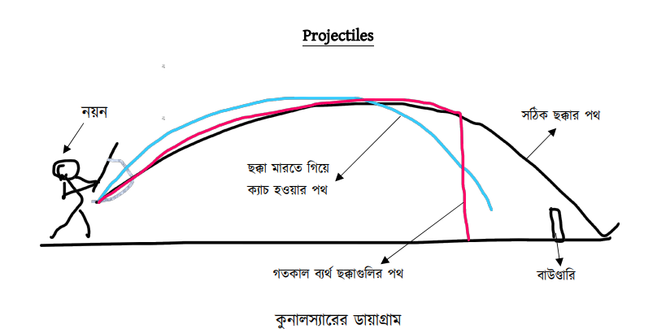

Poems, a short story, a thriller, an essay on Tagore, and a history of music itself — from friends and well-wishers in Hamilton, Wellington, Palmerston North, and overseas in India.
মানুষের চলা!
কখনও স্মিথিত গতি, কখনও চঞ্চলা
এই চলার শেষ কোথায় কেহ নাহি জানে
শেষ তবুও আছে জানি অফুরন্ত প্রাণ
যেথা হতে জীবনের দিচ্ছে প্রেরণা
দুরন্ত গতির বেগ, সেই দিকে চলি
জানি বা, না জানি তবু সমুদ্রের পথে,
জীবনের স্রোত গতি, তুচ্ছ করি তাই,
যা কিছু অর্জন ছিল, ফেলে চলে যাই,
জন্ম মৃত্যু সেতু পার হচ্ছি সদাই.
ছাত্রাবস্থায় অরোরা বোরিয়ালিস (Aurora Borealis) কথাটা শুনেছিলাম এবং তা সম্পর্কে একটা অস্পষ্ট ধারণা তৈরী হয়েছিল। জেনেছিলাম ‘it is a kind of light in the night sky near the north pole due to atmospheric electrical activity’, অর্থাৎ উত্তরমেরু সন্নিহিত অঞ্চলের বায়ুমন্ডলে বিদ্যুৎ প্রভাবে রাতের আকাশে দৃশ্যমান আলো। ঠিক কিভাবে তা ঘটে তখন তা বুঝিনি, এখনও যে ভাল বুঝি তা নয়। পরে জানলাম কুমেরু বা দক্ষিণমেরু সন্নিহিত অঞ্চলের বায়ুমন্ডলেও এই একই আলোর খেলা চলে। সাধারণভাবে কুমেরুর সেই আলোকে বলা হয় Southern lights বা দক্ষিণী আলো। আর তার বৈজ্ঞানিক নাম হ’ল অরোরা অস্ট্রালিস (Aurora Australis)।
অরোরা অস্ট্রালিসের ছবি ডা: মণিদীপা দাসের সৌজন্যে প্রাপ্ত
অ্যান্টার্টিকা এবং নিউজিল্যান্ড ও অস্ট্রেলিয়ার দক্ষিণপ্রান্তের অঞ্চলগুলি থেকে বছরের বিভিন্ন সময়ে রাতের আকাশে এই আলো দেখা যায়, শীতকালে বেশী। নিউজিল্যান্ডে ডানেডিন ছাড়িয়ে আরো দক্ষিণে যাবার সুযোগ হয় নি। তবে সুযোগ হয়েছে অস্ট্রেলিয়ার একদম দক্ষিণ-পশ্চিম প্রান্তের শহর অ্যালবানীতে যাবার। ২০২৩ সালের ফেব্রুয়ারী মাসে সপ্তাহ তিনেক এখানে থাকার সময় খবর পেলাম যে এখানকার সমুদ্রতট থেকে দক্ষিণ দিগন্তে ঐ আলো দেখা যাচ্ছে। সেই সময় তা নিউজিল্যান্ডের দক্ষিণপ্রান্ত থেকেও দেখা গিয়েছিল। যাইহোক এক রাতে খাওয়া-দাওয়ার পরে ক্যামেরা ইত্যাদি নিয়ে দেড় মাসের নাতি, মেয়ে-জামাই এবং গিন্নী সমেত আমরা সকলে জড়ো হলাম অ্যালবানীর সমুদ্রের ধারে। খুব বেশী রং-বেরংএর না হলেও সেই আলোর খেলা দেখলাম ঘন্টা খানেক ধরে। উপরে আমার মেয়ের তোলা তার একটা ছবি এই প্রতিবেদনের সঙ্গে যুক্ত করলাম। প্রসঙ্গত বলে রাখি আমার মেয়ে-জামাই এবং নাতি পশ্চিম অস্ট্রেলিয়ার অ্যালবানী শহরের বাসিন্দা।
আমরা রাত দশটার পরে সমুদ্রের ধারে গিয়েছিলাম। উপরের ছবিতে রাতের আকাশে অস্তরাগের মত যা দেখা যাচ্ছিল তাই ছিল আমাদের দেখা অরোরা অস্ট্রালিস। তাছাড়া পরিস্কার আকাশে ছায়াপথ এবং অগুন্তি তারাও দেখা যাচ্ছিল। অরোরার আলো কিন্তু স্থির নয়, তার উজ্জ্বলতা কমে বাড়ে, রঙ বদলায়, কখনো পর্দা, কখনো ফোয়ারা, কখনো বা পাকানো ইত্যাদি বিভিন্ন আকার ধারণ করে। তবে এই ছবির নিচের দিকে দিগন্তে যে একটা একটু বড় উজ্জ্বল আলো দেখা যাচ্ছে তা একটা লাইট হাউসের আলো। আর নিচের ছবিটিতে এই আলোর খেলা আরো ভালোভাবে ধরা পড়েছে। প্রসঙ্গত বলে রাখি এই জ্যোতি খালি চোখে দেখার চেয়ে শক্তিশালী লেন্সযুক্ত ক্যামেরায় আরো ভালোভাবে ধরা পড়ে।
ইন্টারনেট, উইকিপিডিয়া এবং গুগলের যুগে বিভিন্ন জানা-অজানা বিষয়ে এখন খুব সহজেই অনেক তথ্য পাওয়া যায়। তাই ইন্টারনেট ঘেঁটে অরোরা অস্ট্রালিস এবং অরোরা বোরেয়ালিস সম্পর্কে বেশ কিছু তথ্য সংগ্রহ করলাম। সেগুলো এখানে যথাসম্ভব সহজ বাংলায় পরিবেশন করার চেষ্টা করছি। আমার কাছে আগেই খবর ছিল যে পশ্চিমবঙ্গ বিজ্ঞান মঞ্চ রাতের আকাশ পর্যবেক্ষণ করার জন্য প্রশিক্ষণ শিবিরের আয়োজন করে থাকে। এই ফেব্রুয়ারীর মাঝামাঝি সময়ে বর্ধমানের কাটোয়াতে এরকম একটা শিবির হয়ে গেল। সুতরাং আন্দাজ করছি যে ভারত থেকে দেখা না গেলেও বিজ্ঞান মঞ্চের সদস্যরা এবং মঞ্চের কার্যকলাপে অংশগ্রহণকারী ছাত্রছাত্রীরা এই মেরু-জ্যোতি সম্পর্কে জানতে আগ্রহী হবেন।
প্রাচীন রোমান উপকথায় ভোরের দেবীর নাম হ’ল ‘অরোরা’। উপকথায় বলা হয়েছে ঐ দেবী সূর্যোদয়ের বার্তাবহন করে পূর্ব থেকে পশ্চিম দিকে ভ্রমণ করেন। প্রাচীন গ্রীক কাব্যে এই ঊষাদেবীর নাম ‘ইওস’ এবং বলা হয়েছে তিনিও রাত্রি অবসানে বিভিন্ন রঙের আালোর খেলায় তমসাচ্ছন্ন আকাশকে উদ্ভাসিত করেন। বোরিয়ালিস এবং অস্ট্রালিস হ’ল প্রাচীন গ্রীক উপকথায় যথাক্রমে উত্তুরে এবং দখিণা হাওয়ার দেবতাদের নাম। এই নামগুলি থেকেই সুমেরু এবং কুমেরু জ্যোতির নামকরণ হয়েছে।
দৃশ্যমান এই জ্যোতি বা প্রভা সৃষ্টির বৈজ্ঞানিক প্রক্রিয়াটি বুঝতে হ’লে প্লাজমা কী তা জানা দরকার। প্রথমেই বলে রাখি এই প্লাজমা কিন্তু রক্তের প্লাজমা বা রক্তরস নয়। এ হল পদার্থের একটি অবস্থা। দৈনন্দিন অভিজ্ঞতা থেকে আমরা পদার্থের তিনটি অবস্থা – কঠিন, তরল এবং বাষ্প - কী জানি এবং সহজেই বুঝতে পারি। যেমন বরফ, জল এবং জলীয় বাষ্প হ’ল একই পদার্থের তিনটি অবস্থা। প্লাজমা হ’ল পদার্থের চতুর্থ অবস্থা। সূর্য, নক্ষত্র সমেত বিশ্ব-ব্রহ্মাণ্ডের বেশীরভাগ বস্তুই এই প্লাজমা অবস্থায় আছে। এই প্লাজমার অনেকটাই আধানযুক্ত কণা দ্বারা গঠিত এবং তার মধ্যে আছে ইলেকট্রন এবং বিভিন্ন আয়নায়িত মৌল।
সূর্যের আবহমণ্ডলের একদম বাইরের আংশটির নাম করোনা এবং এটি ভীষণ উত্তপ্ত প্লাজমা দ্বারা গঠিত। সূর্যের পৃষ্ঠতল ছাড়িয়ে করোনা মহাশূন্যে অনেকদূর পর্যন্ত বিস্তৃত। আবার সূর্যের পৃষ্ঠতল চৌম্বকক্ষেত্র দ্বারা আবৃত। এই চৌম্বকক্ষেত্র করোনার কণাগুলিকে প্রভাবিত করে। করোনার উচ্চ তাপমাত্রা এর কণাগুলিতে প্রবল গতিসঞ্চার করে এবং তারা সূর্যের মহাকর্ষের আকর্ষণ কাটিয়ে সৌরজগতে বিচ্ছুরিত হয়। এই প্লাজমা প্রবাহকে সোলার উইণ্ড বা সৌরবায়ু বলা হয়। সৌরবায়ু যখন পৃথিবীর কাছাকাছি আসে তখন ভূ-চৌম্বক ক্ষেত্রের প্রভাবে তারা পৃথিবীর মেরু অঞ্চল দুটিতে বেশী বেশী করে সন্নিবিষ্ট হয়। সৌরবায়ুর কণাগুলি যখন পৃথিবীর মেরু অঞ্চলের দিকে ধেয়ে আসে তখন বায়ুমণ্ডলের উচ্চস্তরে (৯০ কিমি থেকে ৭০০ কিমি উচ্চতার ম্যাগনেটোস্ফিয়ারে) গ্যাসের পরমাণুদের আঘাত করে। গ্যাস পরমাণুগুলি উদ্দীপ্ত হয়ে আলো বিচ্ছুরণ করে। এই আলোই আমরা অরোরা বোরিয়ালিস অথবা অস্ট্রালিস হিসাবে দেখতে পাই।
মার্চ মাসের দ্বিতীয় সপ্তাহে যখন এই প্রতিবেদনটি লিখছি তখন নজরে এল নিউজিল্যান্ডের দু’চারটে সংবাদ মাধ্যমে এবং ইন্টারনেটে ফেসবুক ইত্যাদি সামাজিক মাধ্যমে অরোরা নিয়ে খবর এবং আলোচনা হচ্ছে। উপরে যে সৌরবায়ুর কথা বলা হয়েছে তার হ্রাস-বৃদ্ধি হয়। জ্যোতির্বিজ্ঞানীরা জানাচ্ছেন যে মোটামুটি এগারো বছর অন্তর অন্তর সূর্যের অভ্যন্তরে বিস্ফোরণজনিত কার্যকলাপ খুব বেড়ে যায় এবং করোনা থেকে প্রচুর পরিমাণে প্লাজমা বেরিয়ে আসে। একে বলে Coronal Mass Ejection। তার ফলে সৌরবায়ু সৌরঝড়ে পরিণত হয়। এখন নাকি এটাই ঘটছে এবং তা আরো বছর দুয়েক ধরে চলবে। তাঁরা আরো জানাচ্ছেন যে মার্চ এবং সেপ্টেম্বর মাসে সূর্য যখন বিষুবরেখার উপর অবস্থান করে তখন নিউজিল্যান্ড থেকে অরোরা দেখতে পাওয়ার সম্ভাবনা বেশী।
খবর পেলাম আমরা যখন অস্ট্রেলিয়ায় ছিলাম তখন ওয়েলিংটন থেকেও দু-একদিন নাকি এই জ্যোতি দেখা গিয়েছিল। আমাদের বাড়ি ওয়েলিংটন শহরের উপকণ্ঠে পাহাড়ের গায়ে। রান্নাঘরের জানালা দিয়ে সুদুর দক্ষিণ দিগন্ত পর্যন্ত দেখা যায়। এখন সজাগ থাকব যাতে আমরা রাত্রে উঠলে যদি আমাদের রান্নাঘর থেকেই ‘তাঁর’ দেখা পাই!
ছোটখাট মানুষটি, খদ্দরের পাঞ্জাবী আর পায়জামার ঘরোয়া পোশাকেই তাঁকে দেখা যেত পাড়ায়। কর্মজীবন ভাড়া বাড়িতে অথবা কর্মসুত্রে পাওয়া আবাসনে কাটিয়ে রিটায়ার করার পর কলকাতার সল্টলেকে নিজের বাড়িতে বসবাস করছেন, একা। কর্মজীবনে ছিলেন দেশবিদেশ-ঘোরা নামকরা অধ্যাপক এবং একাধিক শিক্ষাপ্রতিষ্ঠানের অধ্যক্ষ। স্বল্পভাষী, কিন্তু তুখোড় ডিবেটার এবং চিন্তাশীল সুবক্তা বলে তাঁর নামডাক। আবার প্রচন্ড জেদী ও স্পষ্টবক্তা, শত বাধা বা ভয় তাঁকে দমিয়ে রাখতে পারত না।
বাড়িতে কাজের মেয়েটির নাম আয়েশা, ‘দাদামশায়’ সম্বোধনটি তারই সৃষ্টি। অনেক সময় ছোট করে বলে ‘দাদা’। পাড়ার রাস্তাঘাটে বা বাজারে তাঁকে সবাই ‘স্যার’ বলেই চেনে, তার শিক্ষক-জীবনের পরিচিতি।
কলকাতার এই অঞ্চলটি গড়ে উঠেছে সম্প্রতি, গত ৫০-৬০ বছরে, জলাজমি উদ্ধার করে। এখানকার বাসস্থানগুলি তাই বেশী পুরনো নয় এবং রকমারি আধুনিক স্টাইলে তৈরি। বাসিন্দাদের বেশীরভাগই অবস্থাপন্ন বাঙ্গালী। কিছু কিছু অ-বাঙ্গালীও আছেন, যাঁরা বাঙ্গালী প্রতিবেশীদের চোখে অনভিপ্রেত না হলেও ‘অতিথি’ মত, কারণ তাঁরা ঠিক ‘ভূমিপুত্র’ ন’ন। আর একটি অনুচ্চারিত সত্য এই যে সল্টলেকে অ-হিন্দু, বিশেষত মুসলমান, বাসিন্দা নিতান্তই কম। নানা ভাষা, নানা মতের দেশ ভারত, কিন্তু প্রতিবেশী-সুলভ পারস্পরিক পরিচিতির ঘনিষ্ঠতা ভাষা বা মতের এই ভিন্নতার কারণেই সব সময় গভীর হয়ে উঠতে পারে না। এমন কি তাদের সহাবস্থা্নও সব সময়ে শান্তিপূর্ণ হয় না।
দাদামশায়ের প্রতিবেশীদের মধ্যে কিন্তু একটি মুসলমান পরিবার আছে। গৃহকর্তার নাম হাসান, তাঁর স্ত্রী জুলেখা। হাসানসাহেব পেশায় উকিল, হাইকোর্টে তাঁর পসার ভালই। তাই তিনি উচ্চবিত্ত। পাড়ায় তাঁকে অনেকেই চেনে, দু-একজন হয়ত তাঁর মক্কেল। তবে ভদ্রতা বিনিময়ের বেশী পরিচিতি তেমন কারুর সঙ্গে তাঁর নেই, ঘনিষ্ঠতা ত নয়ই।
সল্টলেকের কাছাকাছি আছে একটি বস্তি। গরীব শ্রমজীবি মানুষের বাসস্থান, যাদের বড় অংশ মুসলমান। এখানকার অনেকে, বিশেষতঃ মেয়েরা, সল্টলেকের মধ্যবিত্ত পরিবারগুলিতে গৃহকর্মী হিসেবে কাজ করতে যায়। সাদিয়া নামের একটি মেয়ে এখান থেকে প্রতিদিন হাসানসাহেবের বাড়ি সমেত তিন-চারটি বাড়িতে কাজ করতে আসে। দাদামশায়ের বাড়ির আয়েশা আসত আরও দূর থেকে, বাসে বা ট্রেনে। বিভিন্ন পরিবারের গৃহকর্মীরা পরস্পরের সুখ-দুঃখের ভাগী, বন্ধুর মত। তাদের মধ্যে কেউ হিন্দু, কেউ বা মুসলমান, কিন্তু সবাই সহায়সম্বলহীন গরীব। এইটিই তাদের মিল। বিভিন্ন বাড়ির বিভিন্ন ব্যবস্থা। কোন গৃহস্থ গৃহকর্মীকে শুধু সকালের জলখাবার দেয়, কেউ বা দুপুরের খাবার। কিন্তু সমস্যা হয় গরমের দিনে স্নান করার সুবিধার অভাবে। মধ্যবিত্ত গৃহিণীরা বাড়ির কাজের মানুষকে নিজেদের বাথরুম ব্যবহার করতে দিতে চান না। আয়েশার সে সমস্যা নেই। দাদামশায় নিজের থেকেই তাকে বাড়ির বাথরুম প্রয়োজনমত ব্যবহার করতে বলেছেন।
যেদিন সে কাজ শুরু করে দাদামশায় কাজ বুঝিয়ে দেবার সময় বলেছিলেন যে তাকে রান্নাও করতে হবে। তিনি কি খেতে পছন্দ করেন জানতে চাইলে দাদামশায় বলেছিলেন ‘দু-চারদিন তুই নিজের পছন্দমত রাঁধ, সেগুলি চেখে আমি জানাব কোনগুলি আমার অপছন্দ’। তবে তিনি যে মাংস খান না এটি জানিয়ে দিয়েছিলেন। একা মানুষের সংসারে কাজ কম বলে দাদামশায়ের রান্না ও অন্যান্য কাজ আগে সেরে আয়েশা অন্য বাড়ির কাজে যেত। আবার দুপুরে ফিরে আসত দাদামশায়ের সঙ্গে খাওয়াদাওয়া করতে। প্রথম দিন খাবার বেড়ে দিতে গেলে তাকে থামিয়ে দাদামশায় বলেছিলেন ‘আমি কি খাব, কতটা খাব তোর জানার কথা নয়, তাই আমিই বেড়ে নেব আর সঙ্গে তোকেও বেড়ে দেব, কাজের সুবিধা হবে।’ খাবার নিজে বেড়ে খান এবং নিজেরটির সঙ্গে কাজের মেয়েকেও খাবার বেড়ে দেন এ রকম গৃহকর্তা বা গৃহিণী আয়েশা আগে দেখে নি।
দাদামশায় যদিও একা এবং নিতান্তই স্বল্পাহারী, আয়েশাকে রাঁধতে হত একটু বেশী করেই, দাদামশায়ের অতিথিদের জন্য। তিন-চারটি পরিচয়হীন রাস্তার কুকুর তাঁর নিত্য অতিথি। এদের মধ্যে একটি বৃদ্ধ এবং খুঁড়িয়ে হাঁটে। ৭ নম্বর বাড়ির কাজের মেয়ে নাজিয়া মজা করে তাকে ডাকে ‘লেংচু’ বলে। সে যেন দাদামশায়ের বেশী প্রিয়। আর একজন মানুষ, নাম জনার্দন। সে মুচি, বিহারের মানুষ, কথা বলে বাংলা-হিন্দি মিশিয়ে। বাজারের কাছে যন্ত্রপাতি সাজিয়ে বসে রোজ। খদ্দেরদের তাগিদমত জুতো সারাই, পালিশ ইত্যাদি ক’রে তার রুজির ব্যবস্থা হয়। অনেকটা দূর থেকে তাকে আসতে হয়। দুপুরে খাবার জন্যে এক-ঠোঙ্গা ছাতু, একটু নুন ও দু-তিনটি কাঁচালঙ্কা সঙ্গে নিয়ে সে কাজে আসে। বাজারের মুখে সরকারি টিউবওয়েল থেকে ছাতু মাখার জল আনতে গেলে তাকে প্রায়ই কথা শুনতে হয় ‘নিচু জাত’ বলে। একদিন জুতো পালিশ করানোর সময় ব্যাপারটি দাদামশায়ের কানে আসে। তিনি জনার্দনকে বলেন তাঁর বাড়িতে খাবার সময় চলে আসতে। এই ব্যবস্থায় গরমের দিনে তার মাথার ওপর ছাত জুটল কিছুক্ষণের জন্য আর আয়েশার রান্না ডাল-ভাত খেয়ে পেট ভরারও ব্যবস্থা হল। ছাতুটি বাঁচিয়ে সে সন্ধ্যার জলখাবার সারত। ফলে বাড়ি ফিরতে পারত একটু বেশীক্ষণ কাজ ক’রে। তাতে অফিস-ফেরতা বাবুদের সুবিধা হ’ল আর জনার্দনের রোজগারও একটু বাড়ল।
দু-একদিন আসার পর জনার্দন নিজের থেকেই বলেছিল সে দাদামশায়ের বাগানের ফুলগাছগুলিতে নিয়মিত জল দিয়ে দেবে। শুধু দাক্ষিণ্য নিতেই নয়, সে তার সাধ্যমত কিছু দিতেও চায়, এটি বুঝে দাদামশায় খুশি হয়েছিলেন। জনার্দনকে বলেছিলেন মাঝে মাঝে জল দিলেই হবে।
আয়েশার বন্ধুরাও দুপুরের খাবার পর অনেক সময় দাদামশায়ের বাড়ির বারান্দার নিরিবিলি আশ্রয়ে এসে গল্পগুজব করে, কখনও লুডো বা তাস খেলে। কেউ কেউ শুক্রবারে জুম্মার নামাজও সেরে নেয় ঐ বারান্দায়, পশ্চিমমুখী হয়ে। নাজিয়া দাদামশায়ের খবরের কাগজগুলোর পাতা ওল্টায় নিয়মিত।
দাদামশায় নিজে বসার ঘরের ইজিচেয়ারে শুয়ে কিছুক্ষণ বিশ্রাম নেন, মাঝেমাঝে আয়েশাদের আড্ডায় যোগ দেন। তাদের মধ্যে মতের গরমিল হলে তারা দাদামশায়ের সালিশি মানে। মাঝেমাঝেই দাদামশায়ের ডাক পড়ে সভা-সমিতিতে, পৌরিহিত্য করতে বা বক্তৃতা দিতে। গাড়ি আসে তাঁকে নিয়ে যেতে। তিনি বেরিয়ে গেলেও তাঁর অতিথিরা নিজেদের সময়মতই যায়। বাড়ির চাবি থাকে আয়েশার দায়িত্বে।
সামনে রমজানের ঈদ। এক মাস রোজার উপবাসের শেষে মুসল্মান সম্প্রদায়ের আনন্দোৎসব। হাসানসাহেবের বাড়িতে অতিথি সমাগম হবে তার প্রস্তুতি শুরু হয়েছে। সাদিয়ার ব্যস্ততা বেড়েছে। তবে ঈদের ‘বোনাস’ হিসেবে সে শাড়ি ও কিছু বাড়তি বেতনও পাবে। সাদিয়া অবশ্য ঈদের দিনটিতে ছুটি নিয়েছে, নিজের বাড়িতে ঈদ কাটাবে ব’লে। আত্মীয়-প্রতিবেশী কয়েকজন একসঙ্গে হয়ে ঈদের ভোজ রান্না এবং খাওয়াদাওয়ার ব্যবস্থা হয়েছে তারই বাড়িতে। তাকে রান্নাবান্নায় সাহায্য করবে আয়েশা। আর ঈদের ভোজে দাদামশায় হবেন তাদের সম্মানীয় অতিথি। ঈদের আনন্দ ও খাবার ভাগ করে নেওয়ারই রেওয়াজ।
হাসানসাহেবের বাড়ির কাজকর্ম সেদিন নাজিয়া করে দেবে, এই ব্যবস্থায় জুলেখা তাকে ছুটি দিয়েছেন। নাজিয়ার বয়স ১৩-১৪’র বেশী নয়। মায়ের সঙ্গে থাকে ঘুপচি এক-ঘরের বাসস্থানে। সে স্কুলে পড়ত, ইংরেজি, বাংলা লিখতে পড়তে পারে। দিদিমণিরা বলত পড়াশুনায় তার মাথা আছে। তার বাবা-মায়ের প্রতিদিন ঝগড়া হত ছোটখাট ব্যাপার নিয়ে। মাঝে মাঝে মায়ের গায়ে বাবার হাতও উঠত। একদিন বাবা বাড়ি ছেড়ে বেরিয়ে যায়। সে শুনেছে তার বাবা কাছাকাছি পাড়ায় তার মায়ের বন্ধু মুনিরাখালার সঙ্গে ঘর বেঁধেছে। নাজিয়াকে স্কুল ছেড়ে কাজে লাগতে হয়েছে। তিনটি বাড়িতে নিয়মিত কাজ করে সে। তার মা সালমা কাজ করে সেলাই কারখানায়। ঈদের দিনে কাজে গেলে ‘উপরি’ বেতন পাওয়া যাবে তাই সালমা ছুটি নেয় নি। ঘরে তার প্রায় হর-রোজই রোজা, ঈদের দিনের আনন্দও তার জন্য নয়। অন্তত দিনটি নাজিয়ার যে ভাল কাটবে এইটিই সালমাকে স্বস্তি দিয়েছে। কিছু পয়সা জমিয়ে যদি একটা সেলাইয়ের মেশিন সে কিনতে পারে তা হলে তার রোজগার একটু বাড়বে। তখন নাজিয়াকে কাজ ছাড়িয়ে আবার স্কুলে পাঠাবে, এই তার ইচ্ছা। সামান্য সঞ্চয় যা হয়েছিল নাজিয়ার বাবা সেটি নিয়ে গেছে।
ঈদের দিন। দাদামশায় বাজার থেকে এক তোড়া ফুল ও এক বাক্স মিষ্টি কিনে হাসান সাহেবের বাড়িতে গেলেন। বেল বাজাতেই ভেতর থেকে নারী কন্ঠস্বরে ভেসে এল “দেখেশুনে দরজা খুলো”। মুসলমান পরিবার, আনাহুত আগন্তুক সম্বন্ধে সন্ধিগ্ধ। দরজা খুললেন হাসানসাহেব। দাদামশায় হাত জোড় করে তাঁকে সম্ভাষণ করলেন ‘ঈদ মুবারক’ ব’লে। হাসানসাহেব একটু অপ্রস্তুত হয়ে বললেন ‘আজ আমরা এক্টু ব্যস্ত আছি, আপনাকে বসতে বলতে পারছি না’। উত্তরে মৃদুভাষী দাদামশায় বললেন ‘আমি আপনার প্রতিবেশী, সতের নম্বরে থাকি। আজ ঈদের দিন, তাই আপনাকে এবং আপনার পরিবারের সকলকে ঈদের শুভেচ্ছা জানাতে এসেছিলাম। ফুলের তোড়া ও মিষ্টির প্যাকেটটি তাঁর হাতে দিয়ে বললেন ‘আপনাদের দিনটি আনন্দে কাটুক, এই আমার কামনা’।
হাসানসাহেন থতমত। এ পাড়ায় তিনি নতুন, কিন্তু কলকাতায় তাঁর অনেকগুলি ঈদ কেটেছে আজকের অভিজ্ঞতাটি অভিনব, আগে কখনও হয় নি। পাড়ার অন্য অনেকের মতই এই বয়স্ক প্রতিবেশীটিকে তিনি দেখেছেন কিন্তু কখনও পরিচয় হয় নি। অথচ তিনি নিজে বাড়ি ব’য়ে এসে তাঁর পরিবারকে ঈদের শুভেচ্ছা জানিয়ে গেলেন। অর্থাৎ তাঁর ধর্মীয় পরিচিতি এই প্রতিবেশীটি জানেন এবং শ্রদ্ধা করেন।
ঈদ কাটিয়ে সাদিয়া কাজে ফিরলে হাসানসাহেব তার কাছে শুনলেন ১৭ নম্বরের দাদামশায় ছিলেন তার ঈদের নিমন্ত্রিত অতিথি। দাদামশায় সকাল-সকালই পৌঁছে গিয়েছিলেন। সঙ্গে এনেছিলেন সকলের জন্য মিষ্টিদই ও সন্দেশ। এবার ঈদ পড়েছে শীতের মধ্যে। রান্নাঘরের বাইরে রোদে বসে তিনি সকলের সঙ্গে গল্পগুজব করে মাতিয়ে রেখেছিলেন। তাঁর কাছ থেকে তারা শুনেছে যে দেশভাগের আগে যে গ্রামে তিনি বড় হয়েছিলেন সেটি এখন বাংলাদেশে। সেখানে তাঁর ঘনিষ্ঠ বন্ধুবান্ধবের মধ্যে অনেকেই ছিল মুসল্মান। প্রতিদিন তাঁরা একসঙ্গে পড়াশোনা, খেলাধূলা করতেন। ঈদের দিনগুলি তাঁর কাটত তাদের বাড়িতে, বরাবর। ঈদের সে ভোজের সুগন্ধ ও স্বাদ তাঁর এখনও মনে পড়ে।
ঈদের খাবারের প্রধাণ আকর্ষণ মাংসের বিরিয়ানি। অনেক সময় মাংসটি হয় গরুর, যা হিন্দুদের জন্য নিষিদ্ধ। কৌতূহলী হাসানসাহেব জানতে চাইলেন দাদামশায় কি খেলেন। সাদিয়া বলল দাদামশায় কোন মাংসই খান না, তাই সে তাঁর জন্য রোজের মতই মাছের ঝোল ও ভাতের ব্যবস্থা রেখেছিল। কিন্তু দাদামশায় ঈদের বিরিয়ানিও চেখে দেখতে চাইলেন এবং মাংস বাদ দিয়ে দু-মুঠো খেলেন। কেমন হয়েছে জানতে চাইলে তিনি বললেন তাঁর বন্ধুদের বাড়ির বিরিয়ানি হত আরও সুস্বাদু। হাসানসাহেব আবারও বুঝলেন দাদামশায়টি স্বতন্ত্র চরিত্রের মানুষ।
শীত বেশ জাঁকিয়ে পড়েছে। দাদামশায় দুপুরের বিশ্রামে একদিন ব্যঘাত ঘটাল বাড়ির বাইরের হৈচৈ। দরজা খুলতেই দেখলেন আয়েশাসমেত পাঁচ-সাতজন গৃহকর্মী মেয়ে হাজির হয়েছে, সবাই কোন কারণে উত্তেজিত। তারা বলল টিভি এবং রেডিওতে জানিয়েছে যে দিল্লির কাছে কোথায় নাকি একটি মসজিদ কারা ভেঙ্গে দিয়েছে আর তাই নিয়ে হিন্দু-মুসলমানের দাঙ্গা শুরু হয়েছে। যেসব বাড়িতে তারা কাজ করে তারা তাদের বাড়ি চলে যেতে বলেছে। কিন্তু তারা যেতে ভয় পাচ্ছে। দাদামশায় তাদের শান্ত করে টেলিফোন করতে গেলেন। ফিরে এসে বল্লেন তিনি পুলিসের সঙ্গে কথা বলেছেন। পুলিস বলেছে গাড়ি পাঠাবে তাদের বাসস্থানে পৌঁছে দেবার জন্য। তবে তারা যদি তাঁর বাড়িতে থাকতে চায় ত তাও করতে পারে।
পুলিসের বড়সাহেব দাদামশায়কে শ্রদ্ধা করেন, তাই তাঁর টেলিফোনে কাজ হ’ল। কিছুক্ষণের মধ্যেই পুলিসের ভ্যান এল, মেয়েদের নিরাপদে বাড়ি পৌঁছে দিতে। বস্তির চারপাশে পুলিস পাহারার ব্যবস্থা থাকবে কিনা দাদামশায় জানতে চাইলে পুলিসের লোকটি বলল থাকবে। হাঙ্গামার সুযোগ নিয়ে অনেক সময় জমি-ব্যবসায়ীরা বস্তিগুলিতে আগুন লাগিয়ে জমি খালি করার চেষ্টা করে। তাই দাদামশায়ের উদ্বেগ, যেটি তিনি তাঁর পুলিস-অফিসার বন্ধুকে জানিয়ে থাকবেন।
মোগল বাদশা বাবরও নেই, হিন্দু অবতার রামও নেই। কিন্তু তাদের ঘিরে প্রাচীন শহর অযোধ্যায় হিন্দু-মুসল্মানের কলহ ও রক্তক্ষয়ী তান্ডব চলছে আজও। এই দাঙ্গাটিও চলল বেশ কিছুদিন ধরে। প্রাণ হারাল বহু নিরীহ মানুষ, সম্ভ্রম হারাল বহু অসহায় নারী। কারুর জয় হল না। হার হল মনুষ্যত্বের, ধর্মের নামে।
কলকাতা শহরে দাঙ্গার প্রকোপ ছিল অল্প। তাও দাদামশায় একদিন পায়ে হেঁটে গেলেন সাদিয়াদের পাড়ায়, তারা কেমন আছে জানতে এবং তাদের ভরসা জোগাতে। খবর পেয়ে পাড়ার অনেকেই এসে হাজির হল। সাদিয়াদের এলাকার সবচেয়ে বয়স্ক মানুষটির নাম মোতালেব। কিন্তু সবাই তাঁকে ডাকে ‘মতলবভাই’ বা ‘মতলবচাচা’ বলে। তাঁর বয়স ৯০ পেরিয়ে গেছে। বৃদ্ধ দাদামশায়কে তাদের দুঃসময়ের বন্ধু হিসেবে পেয়ে তিনি তাঁর হাতদুটি ধরে চোখের জল সামলাতে পারলেন না। তাঁর মনে পড়ল দেশভাগের সময়কার দাঙ্গার কথা। তখনও আর এক বৃদ্ধ এসে তাদের পাড়ার কাছেই ছিলেন। পায়ে হেঁটে বাড়ি বাড়ি ঘুরে ভরসা দিয়ে বলেছিলেন হিংসা ভুলে শান্ত হতে। হিন্দু-মুসলমান সবাই ভারতীয়, ভাই-ভাই। তিনি ছিলেন গান্ধীবাবা। তিনি স্বর্গে গেছেন। তাঁর কথা কি কেউ মনে রেখেছে? মতলবচাচা নিজেকেই প্রশ্ন করলেন।
দাদামশায় চলে যাবার পর মতলবচাচা বললেন দাদামশায়ের মত মানুষকে আল্লাহ স্বর্গে স্থান দেবেন, তোরা দেখে নিস। কথাটি শুনে সাদিয়ার মাথায় এল যে দাদামশায়কেও ত একদিন সব ছেড়ে চলে যেতে হবে, তখন তাদের কথা কে ভাববে। সে তার বন্ধুদের ব্যপারটি জানাল। ১৩ নম্বর বাড়ির কাজের মেয়ে সুশীলা বলল তার দিদিমার কাছে সে শুনেছে যে যারা সত্যিই পুণ্যি কাজ করে তারা সশরীরে স্বর্গে যায়। অনেক কাল আগে যুধিষ্ঠির নামে একজন সত্যবাদী মহা পুণ্যবান রাজা ছিলেন। তাঁকে দেবতা ইন্দ্র নিজের সাজানো রথে স্বর্গে নিয়ে গিয়েছিলেন। যুধিষ্ঠিরের সঙ্গে ছিল অসহায় একটি রাস্তার কুকুর। তাকে ছেড়ে তিনি স্বর্গে যেতে রাজি হন নি, তাই সেও গিয়েছিল স্বর্গে। দিদিমার ‘মহাভারত’ বইতে এই সব লেখা আছে।
সাদিয়ার শুনে ভাল লাগল, কিন্তু আবার খটকাও লাগল কি করে তারা জানতে পারবে দাদামশায় কোথায় গেলেন, তাদের ত কেউ কিছু বলে না। কে জানে হয়ত দাদামশায়ই তাদের জানিয়ে যাবেন। আর দাদামশায়ের অতিথি কুকুরগুলো? তারা কি করবে? অতগুলো কুকুরের কি স্বর্গে ঠাঁই হবে?
দাদামশায়ের বন্ধুবান্ধবরা একসঙ্গে হয়ে একদিন তাঁর জন্মদিন পালন করল, সল্টলেকের কম্যুনিটি সেন্টারের হল ভাড়া করে। আয়েশা, সাদিয়ারাও কাজের শেষে সেখানে গিয়ে সব দেখল, শুনল ও খাওয়াদাওয়া করল। স্থানীয় পৌরসভার মেয়রও উপস্থিত ছিলেন। তিনি দাদামশায়কে প্রণাম জানিয়ে কামনা করলেন যেন তিনি আরও অনেক বছর সুস্থভাবে বেঁচে থাকেন। দাদামশায় হাসিমুখে বললেন তাঁর যা বয়স তাতে আর কতদিন সুস্থ ভাবে বাঁচা সম্ভব তিনি জানেন না। আয়েশা, সাদিয়ারা মনে মনে চাইল দাদামশায় চিরকাল বেঁচে থাকুন তাদের দেখ-ভাল করার জন্য।
সবে গরম পড়তে শুরু করেছে। দাদামশায়ের শরীরটা ঠিক যাচ্ছে না, খাওয়াদাওয়া কমিয়ে দিয়েছেন। আয়েশা বলে ডাক্তারবাবুদের ডেকে পাঠাতে, দাদামশায় উত্তর দেন না।
একদিন কাজে এসে আয়েশা দেখল তার পরিচিত দাদামশায়ের দু’জন ছাত্র বাড়িতে রয়েছেন। তাঁরা জানাল আগের দিন রাত্রে দাদামশায় তাঁদের সঙ্গে কথা বলতে বলতে অসুস্থ বোধ করেন। পাড়ার ডাক্তারকে ডাকা হয়। তিনি পরীক্ষা করে উপযুক্ত চিকিৎসার জন্য দাদামশায়কে হাসপাতালে পাঠানোর পরামর্শ দেন। তাই তাঁকে কাছাকাছি একটি হাসপাতালে ভর্তি করা হয়েছে। রাতটা তাঁর কেটেছে অস্বস্তিতে, যদিও তিনি জ্ঞান হারান নি। আয়েশা প্রয়োজনমত কাজকর্ম সারল। নিজেদের জন্য রান্নাও করল। দাদামশায়ের অনুপস্থিতি তাকে পীড়া দিতে লাগল। তার কেমন ভয়-ভয় করতে লাগল দাদামশায় যদি আর না ফেরেন। যদি সত্যিই আল্লাহ তাঁর জন্য সাজানো রথ পাঠান হাসপাতালে, যেমন সুশীলার দিদিমার বইতে লেখা আছে।
এইভাবে দু-তিন দিন কাটল। দাদামশায়ের ছাত্রদুটি রোজ তাকে দেখতে যান। আয়েশা তাদের কাছে শোনে দাদামশায়ের সুস্থ হতে সময় লাগবে। সে ভাবে তার হাতের খাবার খেলে হয়ত দাদামশায় শরীরে বল ফিরে পাবেন, তাড়াতাড়ি সেরে উঠবেন। কিন্তু হাসপাতাল নাকি রাজি হবে না।
সামনে শুক্রবার। আয়েশারা ঠিক করে রেখেছে তারা সবাই ঐ দিনে জুম্মার নামাজ একসঙ্গে পড়বে, দাদামশায়ের বারান্দায়। আল্লাহের কাছে দুয়া চাইবে তাদের দাদামশায় যেন সুস্থ হয়ে বাড়ি ফিরে আসেন তাড়াতাড়ি। সুশীলা বলল তার মায়ের উপদেশমত সে’ও সকালে শিব পুজোর সময় দাদামশায়ের জন্য শিব ঠাকুরের কৃপা চেয়েছে।
শুক্রবার কাজে আসার সময় আয়েশা দূর থেকে লক্ষ্য করল দাদামশায়ের বাড়ির বাইরে কয়েকজন মানুষ দাঁড়িয়ে আছে। খারাপ কিছু ঘটে গেছে মনে করে তার বুকটা ছ্যাঁৎ করে উঠল। কাছে এসে জানতে পারল দাদামশায়ের অবস্থা খারাপ বলে খবর এসেছে। তাঁর ছাত্র দু’জন হাসপাতালে গেছেন, ফিরে এলে সব জানা যাবে। কৌতূহলী প্রতিবেশীরা এক এক করে আসছেন, খবর নিচ্ছেন। আয়েশা লক্ষ্য করল দাদামশায়ের কুকুরগুলোও এসে হাজির হয়েছে, নিঃশব্দে পায়চারি করছে বাড়ির বাইরের রাস্তায়। কুকুরেরা ত বুদ্ধিমান প্রাণী, দাদামশায়ের অনুপস্থিতির দুঃসংবাদ হয়ত তাদেরও পীড়া দিচ্ছে। বয়স্ক লেংচু শুধু আসে নি, বোধহয় পেরে উঠে নি।
তারপর খবর এল সব শেষ। দাদামশায় চলে গেছেন, সজ্ঞানেই। ভোরের দিকে কল্যাণী নামের এক নার্সকে ডেকে দাদামশায় বলেন টেলিফোন করে তাঁর ছাত্রদের ডেকে পাঠাতে। খবর পেয়েই ছাত্রেরা হাসপাতালে হাজির হ’ন। কিন্তু তাঁকে দেখতে পান না। বিশেষ চিকিৎসার জন্য তাঁকে অন্য ওয়ার্ডে সরিয়ে নেওয়া হয়েছে, যেখানে নির্দিষ্ট সময়ের বাইরে কাউকে যেতে দেওয়া হয় না। সে সময়টি বিকেলের দিকে। আয়েশা বুঝল দাদামশায়ের বাড়ির কাজ আজ আর করতে হবে না। চোখের জল মুছতে মুছতে সে অন্য বাড়ির কাজে গেল।
দিনের শেষে বাড়ি ফেরার পথে সে ১৭ নম্বরে গেল খবর নিতে। দাদামশায়ের বসার ঘরে অনেক মানুষ জমা হয়েছে, কিন্তু সে ছাত্র দু’জন নেই। সবাই অপেক্ষা করছে দাদামশায়কে আনা হবে বলে, কিন্তু কেউই জানে না কখন। একজন খবরের কাগজের লোক দাদামশায়ের সম্বন্ধে জানতে চেয়ে তাঁর বন্ধুবান্ধবদের সঙ্গে কথাবার্তা বলছিল। আয়েশা যে দাদামশায়ের কাজের মেয়ে তা শুনে সে তার কাছেও জানতে চাইল। আয়েশা শুধু বলল দাদামশায়ের মত দয়ালু ভালমানুষ যে দুনিয়ায় আছে তা সে আগে জানত না। আর বলল তার মতলবচাচা বলেছে গরীবের বন্ধু বলে দাদামশায়ের জন্য আল্লাহ স্বর্গে জায়গা করে রেখেছেন।
পরের দিন সকালে কাজে এসে যা শুনল তাতে আয়েশা অবাক। দাদামশায়কে নাকি পাওয়া যায় নি। তাঁর বন্ধুরা বারবার বলছেন ‘বডি পাওয়া যায় নি’। সে আন্দাজ করে নিল ‘বডি’ হ’ল মৃতদেহ। সে সাহস করে একজনকে জিগ্যেস করল দাদামশায় কোথায়। সে যেন একটু বিরক্ত হয়ে ‘স্বর্গে, আবার কোথায়?’ বলে হেসে উঠে তার কাছ থেকে সরে গেল।
আয়েশা বুঝল মতলববচাচা ঠিকই বলেছিল। আল্লাহ ত সব সময় সব কিছু দেখতে পান এবং জানতে পারেন। নিশ্চয়ই হাসপাতালে তাঁর সাজানো রথ পাঠিয়ে দাদামশায়কে নিয়ে গেছেন তাঁর কাছে, স্বর্গে, যেমন লেখা আছে সুশীলার দিদিমার বইতে। হঠাৎ তার মনে পড়ল আগের দিন অন্য কুকুরগুলো এসেছিল কিন্তু লেংচু আসে নি। সে ছিল দাদামশায়ের প্রিয়, তাই সেও নিশ্চয়ই গেছে দাদামশায়ের সঙ্গে। দিনের বেলা, তাও আয়েশার কেমন গা ছম ছম করতে লাগল। দাদামশায় ত সশরীরেই স্বর্গে গেছেন, তাদের সঙ্গে যদি দেখা করতে আসেন।
মৃত্যুর পর তাঁর দেহটি চিকিৎসাশাস্ত্রের গবেষকদের কাজে লাগতে পারে এই বিশ্বাস থেকে দাদামশায় সেটি দান করার ব্যবস্থা করে গিয়েছিলেন। এটি ছিল সমাজের প্রতি তাঁর সর্বশেষ দায়িত্ব-পালন।
আয়েশা, সাদিয়াদের এই ব্যাপারটি কেউ জানাল না। মতলবচাচা তাদের আবারও বললেন তাদের দাদামশায়কে আল্লাহ তাঁর পাশেই স্থান দিয়েছেন। তিনি এখন স্বর্গে। কিন্তু তিনি স্নেহভরে তাদের সকলের ওপর সারাক্ষণ নজর রাখছেন।
শুনে আয়েশা, সাদিয়ারা কেমন নিশ্চিন্ত বোধ করল যেমন তারা করত গরমের দুপুরগুলোতে দাদামশায়ের বারান্দায় বসে, তাঁর সঙ্গে কথা ব’লে। আর দাদামশায়ও আগের মতই তাদের সঙ্গে রয়েছেন, অলক্ষ্যে।
সকাল থেকে আমার কেবিনের বাইরে দর্শনপ্রার্থীদের ভীড়। সবাই একবার দেখা করে নিজেদের সমস্যার কথা বলতে চায়।
এরা সবাই একটি বিশেষ ডিভিসনের লোক। বিশেষ কাজ না থাকায় এখানে ব্যবসা বন্ধ করে দেওয়া হচ্ছে। বাড়তি লোকদের চেন্নাইতে ট্রান্সফারের প্রস্তাব দেওয়া হয়েছে, যারা যাবেনা তারা রিজাইন করতে পারে, কোম্পানি তাদের পাওনাগন্ডা কয়েকদিনের মধ্যে মিটিয়ে দেবে। সত্যি বলতে কি, কোম্পানি চায়ওনা খুব বেশি লোক চেন্নাইতে গিয়ে ভীড় করুক। ছলেবলেকৌশলে অধিকাংশ লোকের পদত্যাগপত্র আদায় করার দায়িত্ব আমাকে দেওয়া হয়েছে।
এসব কাজ অবশ্য ভালই পারি, আগে করেওছি। বন্ধুমহলে পেশাদার হিসাবে আমার সুনাম বা দুর্নাম যাই বলুন সেটা আছে। অনর্থক আবেগ, নীতি বা বিবেকের প্রশ্নে জড়িয়ে না পড়ে ম্যানেজমেন্টের দেওয়া দায়িত্ব সুষ্ঠুভাবে পালন করে য়াই। হয়ত একারণেই মাত্র চল্লিশ বছর বয়েসে এতবড় একটা প্রতিষ্ঠানের কলকাতা শাখার অধিকর্তা হয়ে বসেছি।
ডিভিসন বন্ধ হয়ে যাবার ব্যাপারটা জানাজানি হবার পর প্রথমে তীব্র প্রতিক্রিয়া হয়েছিল। দুটি বিকল্পের কোনটিই কর্মচারীদের কাছে গ্রহণয়োগ্য নয়। একটা আন্দোলন দানা বেঁধে উঠতে থাকে। আমি প্রথমেই নেতৃস্থানীয় জনাদুই কর্মচারীকে নিজের দিকে টেনে নি। তাদের সঙ্গে গোপন চুক্তি হয় য়ে তারা কলকাতাতেই বহাল তবিয়তে থাকবে। বিনিময়ে তারা বাকিদের বোঝাবে। এখন অধিকাংশই ব্যাপারটা মেনে নিয়েছে। কয়েকজন এখনও জিদ ধরে বসে আছে, তাদের সঙ্গে আলাদা করে কথা বলে সামান্য কিছু ক্ষতিপূরণের লোভ দেখিয়েছি। সে ক্ষমতা আমাকে দেওয়া আছে।
আজকেও এইসব ঝামেলা মেটাতে মেটাতেই আমাদের পারচেজ অফিসার এসে গেলেন। বিনীত হেসে বললেন, সার, মুখার্জির অর্ডারটা...
মুখার্জি এন্টারপ্রাইজের নামে প্রায় পঞ্চাশলক্ষ টাকার অর্ডারের ফাইল আমার ড্রয়ারে পড়ে আছে। ইচ্ছে করেই ফেলে রেখেছি। গম্ভীরভাবে বললাম, দেখছি।
- ওনাকে কি একবার বলব আপনার সঙ্গে দেখা করতে?
বললাম, বলতে পারেন।
লাঞ্চের সময় হয়ে গেল। বেয়ারা ক্যান্টিন থেকে আমার স্পেশ্যাল লাঞ্চ নিয়ে এসে টেবিলে সার্ভ করে গেল। এইসময় কিছুক্ষণ কেউ বিরক্ত করেনা।
খেতে খেতে ভাবছিলাম।এই কাজটা ভালয় ভালয় মিটে গেলে একটা প্রোমোশন আশা করা য়েতেই পারে। পূর্বাঞ্চলের রিজিওনাল হেডের পজিশন খালিই আছে। একটু অবশ্য ট্যুর থাকবে।
খাওয়া শেষ করে লাগোয়া টয়লেটে হাত ধুতে গিয়ে আয়নায় নিজেকে দেখলাম।উজ্জ্বল স্মার্ট চেহারা। আমি নিয়মিত জিম করি, পরিমিত খাবার খাই।কোন বদভ্যাস নেই। চেহারায় কোথাও বয়সের ছাপ পড়েনি। শুধু রগের পাশে চুলে সামান্য রূপোলি রেখা ধরেছে ওটা বোধহয় আমার স্ট্যাটাসের সঙ্গে মানিয়ে য়ায়। পারিবারিক জীবনেও আমি সুখী। এক ছেলে ও এক মেয়ে, দুজনেই দক্ষিণ কলকাতার নামী স্কুলে পড়ে, পড়াশুনোয় ভাল। স্ত্রী পারমিতা বিভিন্ন এন জি ও'র সঙ্গে সমাজসেবা মূলক কাজে য়ুক্ত থাকে।বছরে দুবার করে আমরা দেশে বা বিদেশে বেড়াতে যাই।
আজ একটু রাত পর্য্যন্ত কাজ করতে হল। হেড অফিসে একটা রিপোর্ট পাঠালাম। তারপর কেবিনে চাবি দিয়ে আমার ড্রাইভার কার্তিককে গাড়ি নিয়ে পোর্টিকোতে আসতে বললাম। আমাদের ফ্ল্যাট প্রিন্স আনোয়ার শা রোডে, পার্কস্ট্রীটে অফিস থেকে যেতে জ্যাম না থাকলে মিনিট পনের লাগে।
বাড়ি পৌঁছে দেখি বুবাই ও সন্তু ঘুমিয়ে পড়েছে। পারমিতা আমার জন্য অপেক্ষা করছে।চটপট হাতমুখ ধুয়ে খেতে বসে গেলাম।
খেতে খেতেই মোবাইলে একটা ফোন এল। বাঁ হাতে ধরে নম্বরটা দেখে অবাক হয়ে গেলাম। অফিসের রিসেপশন থেকে। এতরাতে সিকিউরিটি ছাড়া ত কেউ থাকেনা। ফোনটা ধরতে ও প্রান্ত থেকে সিকিওরিটির লোকটি ভয়ার্ত কন্ঠে জানাল রাতে অফিসে টহল দিতে গিয়ে তারা দেখেছে আমার কেবিনে ভাঙচুর করা হয়েছে। চেয়ার টেবিল কম্পিউটার সব তছনছ হয়ে পড়ে আছে। অথচ কেবিনের দরজা নাকি বাইরে থেকে বন্ধই আছে। কেবিনের চাবি শুধু আমার কাছেই থাকে।
কারা করেছে অনুমান করা শক্ত নয়। তবে সিকিওরিটির সঙ্গে য়োগসাজস না থাকলে চাবি বানান সম্ভব নয়। মেজাজটা খিঁচড়ে গেল। চিফ সিকিওরিটি অফিসারকে ফোন করে বললাম এনকোয়ারি করে দ্রুত ব্যবস্থা নিতে।
পরের দিন গিয়ে দেখি সত্যিই কেবিন পুরো ধ্বংসস্তুপ। চারিদিকে ছেঁড়া কাগজপত্র, ভাঙ্গা কাঁচের টুকরো, কাটা ইলেকট্রিকের তার ছড়িয়ে ছিটিয়ে রয়েছে। ঠিক করতে গোটা দিন য়াবে। আপাতত অন্য একটা ছোট কেবিনে বসলাম। আই টির লোক এসে কম্পিউটার আর টেলিফোনের কনেকশন করে দিয়ে গেল।
এরা যদি ভেবে থাকে এইসব করে আমাকে ভয় দেখাবে.. তাহলে আমি আজ এই জায়গায় থাকতামনা।
কাজে মন দিলাম।
দুই
আজ অফিস থেকে বেরবার আগে অচেনা নম্বর থেকে একটা ফোন পেলাম। সাড়া দিতে ওদিক থেকে লোকটি বলল, " সুগত, আমি বিজন বলছি। চিনতে পারছিস? "
আমি চিনতে পারলামনা। বললাম, " কে বিজন? "
লোকটি বলল, " বিজন দাসগুপ্ত রে, তোর ক্লাসমেট। তোরা জনাই বলে ডাকতি। "
এবার চিনতে পারলাম। বিশেষ বন্ধু না হলেও একসাথে খেলাধুলো করেছি। গলায় আগ্রহ আনার চেষ্টা করে বললাম, " হ্যাঁ, বল। কেমন আছিস তুই? কোথায় আছিস? "
বিজনের গলায় একটু যেন আত্মবিশ্বাস এল। বলল, " তোর অফিসের কাছেই আছি রে। তুই ব্যস্ত না থাকলে একবার আসতাম"
আমি ঘড়ি দেখলাম। আমি আরও আধঘন্টা মতন আছি। পুরান বন্ধুদের দেখার একটা ইচ্ছে থাকেই, তাই বললাম," তাড়াতাড়ি আয় তাহলে। "
বিজন মিনিট পনেরর মধ্যেই এসে গেল। স্কুল ছাড়ার পর এই প্রথম দেখা। চেহারা একটু ভাঙলেও চেনা য়াচ্ছে। তবে চেহারা ও পোশাক আশাকে কোথাও সচ্ছলতার ছাপ নেই। জিগ্যেস করাতে বলল, একটা ছোট প্রাইভেট ফার্মে কাজ করে।
বেয়ারাকে ডেকে এককাপ চা দিতে বললাম। আমি দিনে দুবারের বেশি চা খাই না।
চা খেতে খেতে বন্ধুবান্ধবদের কথা হল। বিজনের সঙ্গে অনেকেরই য়োগায়োগ আছে। পুরান দিনের কথাও কিছু হল। মাস্টারমশাইরা অনেকেই রিটায়ার করেছেন, দুএকজন চলেও গেছেন।
চা খেয়ে বিজন আসল কথায় এল। বলল, সৌরভ বলছিল তুই খুব ভাল পজিশনে আছিস। বোধহয় আমাদের ব্যাচে তুই-ই সবথেকে সাকসেসফুল।
আমি মৃদু হাসলাম। এসব কথা শুনতে খারাপ লাগেনা।
বিজন বলল, আমি একটা বিপদে পড়েছি বুঝলি। আমার ছেলেটার হার্টে একটা জটিল সমস্যা ধরা পড়েছে। ভেলোরে নিয়ে অপারেশন করাতে প্রায় তিনলক্ষ টাকা লাগবে। বুঝতেই পারছিস, সামান্য চাকরি করি..
এরকম অভিজ্ঞতা আমার আগেও হয়েছে। এসব ব্যাপারে আমার বিশেষ সহানুভূতি নেই। সত্যি বলতে কি, বিজনকে দেখার পর থেকে আমি একটু সতর্ক ছিলাম।
আমি কথা না বলে পকেট থেকে মানিব্যাগ বার করে একটা দুহাজার টাকার নোট বিজনের দিকে বাড়িয়ে দিলাম। বন্ধুত্বের এটুকু মূল্য দিতেই হয়।
বিজন টাকাটা নিল কিন্তু খুশি হল'না। বলল, তোর কাছ থেকে আর একটু বেশি আশা করেছিলাম। অন্তত হাজার দশেক য়দি দিতে পারতি।
উত্তর না দিয়ে উঠে দাঁড়িয়ে বললাম, চল, এবার বেরতে হবে।
বিজন হতাশ চোখে আমার দিকে কয়েক মুহূর্ত তাকিয়ে রইল তারপর হঠাৎ উঠে দাঁড়িয়ে বলল, অনেক ধন্যবাদ সুগত। বলে হনহন করে বেরিয়ে গেল। আশা করি ওর সঙ্গে আমার আর দেখা হবেনা।
বাড়ি ফিরে পারমিতাকে ঘটনাটা বললাম। পারমিতা আমাকে একবার দেখে নিয়ে বলল, আহা আর কিছু দিলে পারতে। ভদ্রলোকের ছেলের অসুখ।
আমি কিছু বললামনা। পরে ডিনার করে অভ্যাসমত ব্যালকনিতে কিছুক্ষণ দাঁড়িয়ে আছি, পারমিতার কথাটা মাথায় এল। সত্যিই কি আমি বিবেকহীন স্বার্থপর হয়ে য়াচ্ছি? নিজের কেরিয়ারের উন্নতি ছাড়া অন্য কোন ব্যাপারে আগ্রহ নেই? ভাবতে ভাবতে ঠোঁটের কোণে অজান্তেই একটা মৃদু হাসি ফুটে উঠল। এইসব টিপিক্যাল সেন্টিমেন্ট অনেক আগেই পিছনে ফেলে এসেছি। এখন পাখির চোখের মত একটাই লক্ষ্য।
তিন
আজ হেডঅফিস থেকে আমার বস মি: প্রভিন এসেছিলেন। একদিনের ট্রিপ। প্রধানত: এই ক্লোজারের ব্যাপারটা রিভিউ করতেই এসেছিলেন। সব রিপোর্ট দিলাম। মোটামুটি সকলের ট্রান্সফার বা রেজিগনেশন করান গেছে দেখে উনি খুশি হলেন। কাউকে ছাঁটাই করতে হলে সে লেবার ট্রাইবুনাল থেকে আরম্ভ করে কোর্ট অবধি যেতে পারে। ব্যাড পাবলিসিটি ত আছেই। কোম্পানি সেসব ঝামেলা এড়িয়ে য়েতে চায়।
আমরা পার্কস্ট্রীটে একটা রেস্টুরেন্টে লাঞ্চ করছিলাম। উনি খেতে খেতে বললেন, টেল মি দত্তা, ডু ইউ হ্যাভ এনি ইস্যু ইন মুভিং টু মুম্বই?
বড় দায়িত্ব নিতে হলে হেডকোয়ার্টারই আদর্শ জায়গা। আমি তার জন্য প্রস্তুতও। ওনাকে বললাম, সার, আয়াম আ প্রফেসনাল এন্ড রেডি টু বি পোস্টেড এনিহোয়ার।
উনি খুশি হয়ে বললেন, গুড। দেন বি প্রিপেয়ার্ড।
লাঞ্চের পরে অফিসে এসে আরও কিছুক্ষণ কাজের কথা হল।তারপর আমি নিজে ড্রাইভ করে ওনাকে এয়ারপোর্টে ছেড়ে দিয়ে এলাম। সঙ্গে বড় একবাক্স নকুড়ের কড়াপাকের সন্দেশ দিতে ভূললামনা। কলকাতায় এলে দেখেছি লোকে মিস্টি নিতেই পছন্দ করে।
আজ একটু তাড়াতাড়ি বাড়ি ফিরে এলাম।
রাত নটা নাগাদ বিল্ডিংএর সিকিওরিটি ইন্টারকমে ফোন করে একটু ইতস্তত করে বলল, স্যার, একবার নীচে আসতে পারবেন? আপনার গাড়ির কিছু প্রবলেম হয়েছে।
নীচে নেমে দেখি, সাঙ্ঘাতিক কান্ড। কেউ বা কারা গাড়িটা ইচ্ছেমত ভাঙচুর করে গেছে। উইন্ডস্ক্রীন ভেঙ্গে চুরমার, জানালার কাঁচ ভাঙ্গা, গাড়ির বডিতেও অনেক জায়গায় আঘাতের দাগ। সব মিলিয়ে কয়েক মাসে আগে কেনা প্রায় নতুন গাড়িটা আর চেনা য়াচ্ছেনা।
সোসাইটির সেক্রেটারির কাছে ছুটলাম। উনি নীচে নেমে সিকিওরিটি গার্ডদের জেরা টেরা করলেন। তারা অবশ্য দিব্যি করে বলল সন্ধ্যা থেকে রেসিডেন্ট ছাড়া কোন বাইরের লোক আসেনি।
ফ্ল্যাটে এসে শৈবালকে ফোন করলাম। শৈবাল আমার কলেজের বন্ধু, এখন পুলিশের এ.সি। দুটো ঘটনাই বললাম। ও শুনেটুনে বলল, তোর যদি বিশেষ কাউকে সন্দেহ হয়, তাকে আমরা জেরা করতে পারি। কিন্তু কোন ক্লু না পেলে এভাবে এগোন মুশকিল। তবে আমি লোকাল থানাকে বলছি একবার গিয়ে দেখে আসবে।
থানা থেকে রাতেই লোক এল, সবার সঙ্গে কথাও বলল। কতটা লাভ হল জানিনা। মনের মধ্যে একটা দুশ্চিন্তা কাঁটার মত বিঁধে রইল। কেউ বা কারা আমাকে টার্গেট করছে। তারা এরপরে কি করবে জানিনা।
চার
আজ অফিসে কয়েকজন দেখা করতে এসেছিল। এদের বয়স কম, চেন্নাই যেতে রাজি হয়েছে। এদের আশ্বাস দিয়েছিলাম কিছুদিন কাজ করার পর আবার কলকাতায় ফিরিয়ে আনা হবে।
যাবার আগে এরা সেইকথাটাই আরেকবার আমার মুখ থেকে শুনতে চেয়েছিল। একজন বলল, " স্যার বুঝতেই ত পারছেন, যা মাইনে পাই তাতে বড় শহরে আলাদা ঘর ভাড়া করে ফ্যামিলি নিয়ে থাকা পোষায়না। কিছুদিনের জন্য হলে মেস-ফেস করে চালিয়ে নেওয়া যায়।"
আমি হেসে বললাম ," আমি ত আছি "
গতকাল পরভিন সাহেবের সঙ্গে যা কথা হল, আমি আশা করি আর বেশিদিন এই অফিসে থাকবনা। সে কথা এদের না জানাই ভাল।
আর একজন আমতাআমতা করে বলল, " কিন্তু স্যার, ডিভিসনটাই ত বন্ধ হয়ে য়াচ্ছে"
আমি এবার বিরক্ত হবার ভান করে বললাম, " আরে বাবা, এসব ভাবনা আমাদের উপর ছেড়ে দাওনা। আরও দুটো ইউনিট ত থাকছে "
এরা আর কথা না বাড়িয়ে চলে গেল। যাবার পর ক্ষণিকের জন্য মনে সংশয় এল। এই কাজগুলো কি ঠিক করছি? আমার কথায় ভরসা করে এরা এতবড় একটা সিদ্ধান্ত নিতে চলেছে।
একটু পরে মাথা ঝাঁকিয়ে নিজের মনেই হেসে উঠলাম। নাহ,বয়স বাড়ার সাথে সাথে মন দুর্বল হয়ে পড়ছে। এসব ভেবে লাভ নেই।
সন্ধ্যাবেলা বাড়ি ফিরে দেখি পারমিতা ভীতসন্ত্রস্ত হয়ে বসে আছে। বলল, আজ বিকেলের দিকে ল্যান্ডলাইনে একটা ফোন এসেছিল। একটা লোক চাপা গলায় হুমকি দিয়ে বলে, আপনার স্বামীকে একটু সাবধানে থাকতে বলবেন।
আমার মাথায় আগুন জ্বলে উঠল।কে এই লোকটি যে মেঘনাদের মত লুকিয়ে থেকে আমাকে আক্রমণ করে চলেছে। সাহস থাকলে সামনে আসেনা কেন?
আবার শৈবালকে ধরলাম। শৈবাল আমাদের ফোনের নম্বর আর সময়টা জেনে নিয়ে বলল, " ঠিক আছে, আমি নম্বরটা ট্রেস করাচ্ছি "
দুদিন কেটে গেল। নতুন করে কোন ঝামেলা হয়নি। অফিসের কাজও মোটামুটি শেষ। বিকেলে একটু আগে বেরিয়ে বিটি রোডে মাসীর সঙ্গে দেখা করতে গেলাম। মাসীর শরীরটা ভাল যাচ্ছেনা, একবার খোঁজ নেওয়া দরকার। মাস্তুতো ভাই বাঙ্গালোরে চাকরি করে, কলকাতায় মাসী মেসো দুজনেই থাকেন। দুজনেরই বয়স হয়েছে।
মাসী দেখে খুব খুশী হলেন। সবার খোঁজখবর নিলেন। মিস্টিফিস্টি আনাতে চাইছিলেন আমি বারণ করলাম। আধঘন্টা মতন বসে উঠে পড়লাম। এখন সাড়েছটা বাজে, বাইপাসে জ্যাম থাকলে বাড়ি পৌঁছতে আটটা বেজে যাবে।
বিটিরোড দিয়ে সাবধানে চলেছি। এই রাস্তাটায় প্রচুর ট্রাক চলে। সিঁথির মোড়ের কাছাকাছি এসেছি, হঠাৎ আয়নার মধ্য দিয়ে দেখলাম একটা ট্রাক আমার দিকে চেপে আসছে।তাড়াতাড়ি বাঁদিকে সরতে গেলাম কিন্তু তার আগেই প্রচন্ড ধাক্কা। গাড়িটা একপাশে কাত হয়ে গেল। তারপরে আর কিছু মনে নেই।
পাঁচ
নার্সিংহোমে হপ্তা দুয়েক থাকতে হল। ডান হাতের হাড় ভেঙ্গেছিল আর পাঁজরেও চিড় ধরেছিল।সৌভাগ্যক্রমে মুখে বা মাথায় বিশেষ চোট লাগেনি। এখন বাড়িতেও হাতে প্লাস্টার করা আছে, আরও কিছুদিন পরে কাটবে। এখন বাড়ি থেকেই ফোনে বা ই-মেলে টুকটাক অফিসের কাজ শুরু করেছি।
পুলিশ তদন্ত চালিয়ে যাচ্ছে। ট্রাকড্রাইভারের খোঁজ পাওয়া যায়নি, ধাক্কা মেরে পালিয়েছে। আগের ঘটনা গুলোও খতিয়ে দেখছে।
এরই মধ্যে একদিন সন্ধ্যাবেলা শৈবাল ফোন করে বলল, তোর কেসটায় কিছুটা প্রোগ্রেস করা গেছে। তুই বাড়িতে আছিস ত?
উৎসাহিত হয়ে বললাম, আয়।
শৈবাল এসে কিছুক্ষণ ধানাইপানাই করল। পারমিতা চা আর পেস্ট্রি নিয়ে এল। খেতেখেতে টুকটাক গল্প হল। পারমিতা চায়ের কাপ নিয়ে চলে গেলে শৈবাল চেয়ারে হেলান দিয়ে আরাম করে বসল।বলল, তোর প্রথম দুটো কেসে আমরা কোন ক্লু পাইনি। তোর কেবিনের দরজা বন্ধ, চাবি তোর কাছে। তোর গাড়ি ভাঙচুরের ব্যাপারটায় সিকিওরিটি অনেক জেরা করার পরেও বলছে, বাইরে থেকে কেউ আসেনি।
আমি একমনে শুনছিলাম। শৈবাল বলল, তোর কেসে প্রথম ক্লুটা পাই আকসিডেন্টের ঘটনাটায়। প্রত্যক্ষদর্শী এক দোকানদার দাবি করে সে সামনে থেকে দেখেছে ট্রাকড্রাইভারের কোন দোষ নেই, তুই হঠাৎ ডানদিকে সরে গিয়ে ওর সঙ্গে ধাক্কা লাগাস।
সবথেকে মূল্যবান তথ্যটা আজ টেলিফোন সার্ভিস প্রোভাইডারের থেকে পেয়েছি। তোদের বাড়িতে যে হুমকি ফোন এসেছিল সেটা তোর মোবাইল থেকে করা হয়েছিল।
আমি কিছুই বুঝতে না পেরে বললাম, আমার মোবাইল থেকে? তার মানে।
শৈবাল হাসল, বলল সুগত, আমাদের তদন্ত দেখাচ্ছে কোনও ঘটনাতেই বাইরের কারও হাত নেই। তুই বরং একজন ভাল সাইকিয়াট্রিস্ট দেখা।
শৈবাল চলে গেল। আমি স্তম্ভিত হয়ে বসে রইলাম।
ছয়।
গত দুমাস ধরে একজন প্রখ্যাত ক্লিনিক্যাল সাইকোলজিস্টের কাছে কাউন্সেলিং করাচ্ছি। এলগিন রোডে চেম্বার। সপ্তাহে একদিন অফিস থেকে বেরিয়ে ট্যাক্সি নিয়ে চলে যাই। দু-তিনটে সেসনের পরেই ইনি বলেছেন আমার কার্য্যকলাপ আমার অবচেতন মন মেনে নিতে পারছেনা। আমাকে শাস্তি দিতে আমারই মধ্যে এক ভয়ঙ্কর দ্বিতীয় সত্ত্বার জন্ম হয়েছে।তার সামনে আমি অসহায়।
ইনি আশ্বাস দিয়েছেন কয়েক মাস কাউন্সেলিং করলে আমি ঠিক হয়ে যাব। দৈনন্দিন জীবনে করার জন্য আমাকে কিছু মানসিক এক্সারসাইজও দিয়েছেন।
আজকাল অফিস থেকে তাড়াতাড়ি ফিরে আসি। এককাপ চা নিয়ে ব্যালকনিতে বসে আকাশপাতাল ভাবি।
মনের মধ্যে ভয়ঙ্কর এক ঘাতক ঘুমিয়ে আছে। ওর কি প্রয়োজন ফুরিয়েছে না আমাকে শাস্তি দিতে ও আবার জেগে উঠবে?
গল্পটি ২০২৩শে প্রকাশিত আমার গল্প-সঙ্কলন “ভয়ের ভ্যাকসিন” বইটি থেকে নেওয়া। বইটি নীচের লিঙ্কে অথবা কলেজস্ট্রিটে জয়ঢাক প্রকাশনের দোকানে পাবেন। গল্পটি «ভয়ের ভ্যাকসিন» বইতি থেকে নেওয়া (Joydhak Prakashan, Kolkata)।
আমি নানু, নয়ন পোদ্দার। বিশালাক্ষীতলার মৃন্ময়ীদেবী স্মৃতি উচ্চ বিদ্যালয়ের ক্লাস নাইনে পড়ি। আমাদের স্কুলের ক্রিকেট টিমে আমিই গত দুবছরের ক্যাপ্টেন। আমার আগে আমাদের স্কুলটিমের ক্যাপ্টেন ছিল ক্লাস টেন-ইলেভেনের দাদারা। আমি স্কুলটিমে জায়গা পেয়েছিলাম যখন ক্লাস সিক্সে পড়ি। এবং ভালো খেলার দৌলতে ক্লাস এইটেই আমাকে টিমের ক্যাপ্টেন নির্বাচিত করা হয়। আমার মতো এত কম বয়েসে ক্যাপ্টেন এর আগে কেউ কোনদিন হয়নি। অতএব, খেলাধুলোটা যে আমার ভালই আসে, সেটা আমার স্কুল অন্ততঃ মেনে নিয়েছে।
আমাদের স্কুলের খেলাধুলোর ব্যাপারে এই এলাকায় বেশ সুনাম আছে। আমাদের এলাকার চৌদ্দটি স্কুল নিয়ে প্রত্যেক বছর যে ক্রিকেট লিগ হয় – তার চ্যাম্পিয়ন'স ট্রোফিটা এবার নিয়ে পরপর পাঁচবার আমরাই জিতলাম। অর্থাৎ আমি ক্যাপ্টেন হবার আগেই আমাদের স্কুল পরপর তিনবার চ্যাম্পিয়ন হয়েছিল – আমি সেই ধারাটাকেই ধরে রেখেছি মাত্র।
কিন্তু এবারে চ্যাম্পিয়ন হয়ে এবং আমিই এই লিগের বেস্ট ব্যাটার হওয়া সত্ত্বেও আমার মনের মধ্যে একটা কাঁটা খচখচ করছে। এই ফাইন্যাল ম্যাচটা আমরা সত্যিই কি ভালো খেলে জিতলাম? নাকি কোন কারসাজিতে? ব্যাপারটা এতই গোপনীয়, বন্ধুদের সঙ্গেও আলোচনা করা সম্ভব নয়। এই রহস্যটা জানি আমরা মাত্র তিনজন – আমাদের স্কুলের গেম টিচার পার্বতীস্যার, বাংলা ও সংস্কৃতর মাস্টারমশাই - নিত্যানন্দস্যার আর ক্যাপ্টেন হিসেবে আমি। অন্যান্য বার চ্যাম্পিয়ন হয়ে যে অদ্ভুত আনন্দ পাই – এবার অন্ততঃ আমি সেই আনন্দ অনুভব করতে পারলাম না। যদিও আমাদের টিমের অন্য সবাই – যারা ভেতরের খবর জানে না – তারা প্রতিবারের মতোই আনন্দে মেতে উঠেছে।
আমার খটকার বিষয়টি তাহলে শুরুর থেকেই বলি।
ফাইন্যালে এবার যে টিমের সঙ্গে আমরা খেলেছিলাম, সেটি হল ক্ষেমঙ্করী দেবী শিক্ষায়তনের টিম। তাদের গত দশ বছরের লিগ টেবিলে অবস্থান ছিল পাঁচ থেকে সাত নম্বরের মধ্যে। অর্থাৎ ক্রিকেট টিম হিসেবে ওরা বরাবরই মাঝারি মাপের। সেই টিম এবারে যখন তড়তড়িয়ে একেবারে ফাইন্যালে উঠে এল তাতে আমরা সকলেই অবাক হয়ে গেছিলাম। এমনও নয় যে ওদের টিমে নতুন ভালো ভালো প্লেয়ার এসেছে। বা নতুন কোন গেম টিচার এসেছেন। এবং খুব ভালো করে খোঁজ নিয়ে দেখেছি ওদের সব প্লেয়ারই ক্ষেমঙ্করী শিক্ষায়তনেই পড়ে। আমাদের এই লিগে বাইরের কোন খেলোয়াড়কে ভাড়া করে এনে 'খেপ' খেলানো যায় না, সেটা বেআইনি। সেরকম কিছু করে ধরা পড়লে পাঁচ বছরের জন্য সেই স্কুলকে সাসপেণ্ড করে দেওয়ার নিয়মও আছে। তাছাড়া ক্লাস সিক্স থেকে ক্লাস টুয়েলভ পর্যন্ত পাঠরত ছাত্রদের মধ্যে থেকে – পনেরজন ক্রিকেট খেলুড়ে ছাত্র যদি না পাওয়া যায় – তাহলে লিগ থেকে সেই স্কুলের নাম তুলে নেওয়াই ভাল।
সে যাই হোক, ওদের খেলার খটকাটা প্রথম চোখে পড়ল লিগের চার নম্বর খেলায়। আমাদের সঙ্গে ক্ষেমঙ্করী টিমের প্রথম খেলাতে। ওই খেলায় টস জিতে আমরা ফিল্ডিং নিয়েছিলাম, ওদের পাঠিয়েছিলাম প্রথমে ব্যাট করতে। পাওয়ার প্লে রাউণ্ডেও ওদের যখন পনের রানে তিন উইকেট পড়ে গেল, তখনই আমরা বুঝে গিয়েছিলাম, ক্ষেমঙ্করীর টিম আমাদের কাছে কোন ব্যাপারই নয়। কিন্তু তার পরেই খেলাটা আশ্চর্যভাবে ঘুরে গেল। আমাদের টিমে যেন মিসফিল্ডের মহামারি লেগে গেল। ওদের ব্যাটাররা ফ্রন্টফুট বা ব্যাকফুট ডিফেন্সিভ খেলেও পরে বাউণ্ডারি পেয়ে যেতে লাগল। ব্যাপারটা আরেকটু খোলসা করে বলি। ধরা যাক আমি সিলি মিডঅফে ফিল্ডিং করছি, ব্যাটারের ডিফেন্স করা গড়ানো বল, আমার দিকে আসছে – সে বল হঠাৎ দিক বদল করে বিদ্যুৎগতিতে সীমানার বাইরে চলে গেল লং অফ দিয়ে! অথবা ব্যাটের কানায় লেগে লোপ্পা ক্যাচ হয়ে বলটা নেমে আসছে থার্ডম্যান ফিল্ডারের হাতে – কিন্তু না বলটা নিচেয় নামল না, উল্টে বলটা মাঝ আকাশে বাউন্স করে ফিল্ডারের মাথার ওপর দিয়ে চলে গেল বাউণ্ডারির বাইরে – ছক্কা! এরকম উদাহরণ ঝুড়ি ঝুড়ি।
ওদের ইনিংস শেষে ওদের স্কোর হল আট উইকেটে পঁচানব্বই। খেলা শেষে হিসেব কষে দেখেছিলাম, আমাদের আজেবাজে ফিল্ডিংয়ের জন্য মোটামুটি তিরিশ-পয়ত্রিশ রান ওদের আমরা উপহার দিয়েছিলাম। তা না হলে আমরা ওদের পঁয়ষট্টি – সত্তর রানেই বাঁধি দিতে পারতাম। একথা ঠিক আমাদের মধ্যে কেউই ঋষি রোডস্ বা রবীন্দ্র জাদেজার মতো ফিল্ডার নই – কিন্তু ওরকম বাজে ফিল্ডিংও আমরা কোনদিন করিনি। তা না হলে আমরা আগের লিগগুলিতে চ্যাম্পিয়ন হয়েছিলাম কী করে?
এরপর আমরা ছিয়ানব্বই রানের লক্ষ্য নিয়ে ব্যাট করতে নামলাম। ওপেনিং জুটিতে ছিলাম আমি আর পলাশ। প্রথম ওভারের তিনটে বল, আমরা দুজনেই সিঙ্গল রান নিয়ে, একটু দেখেশুনে খেললাম। তারপর ব্যাট চালাতে শুরু করলাম। পলু ওই ওভারের শেষ তিন বলে দুটো চার আর একটা ছক্কা হাঁকাল। তিনটে শটই অনবদ্য – উল্টোদিকে দাঁড়িয়ে আমি মুগ্ধ হয়ে দেখলাম। পরের দু ওভারেও আমরা ভালই রান তুললাম – প্রথম তিন ওভারে আমাদের রান গিয়ে দাঁড়াল কোন উইকেট না হারিয়ে ব্রিশ্রি। আর তারপরেই শুরু হল অদ্ভুত ব্যাপার স্যাপার। আমার এবং পলাশের একটা বলও আর বাউণ্ডারির ধারে কাছে পৌঁছতে পারল না।
কয়েকটা উদাহরণ দিই। চতুর্থ ওভারের প্রথম বলটা এল অফস্ট্যাম্পের ওপর হাঁটুর লেভেলে ফুলটস, আমি নিখুঁত টাইমিংয়ে বলটা লফ্ট করলাম – নিশ্চিত ছক্কা। এতটাই নিশ্চিত ছিলাম, আমি বা পলাশ কেউ রান নেওয়ার জন্য দৌড়লাম না। কিন্তু আশ্চর্য হয়ে দেখলাম – লং অফ বাউণ্ডারির দশ পনের ফুট ভেতরের বলটা সোজা নেমে এল। মনে হল মাঝ-শূণ্যে অদৃশ্য কোন দেওয়াল রয়েছে – সেই দেওয়ালে ধাক্কা খেয়ে বলটা – গাছ থেকে পাকা আম পড়ার মতো - টুপ করে মাটিতে নেমে পড়ল। এরপরে আমাদের একটা বলও বাউণ্ডারির ছুঁতে পারল না। পলাশ এবং আমি যে পাশ দিয়েই মারি - সে মিডঅফ, মিডঅন, এক্সট্রা কভার, স্কোয়ার লেগ – ব্যাট থেকে বিদ্যুৎ গতিতে বল বাউণ্ডারির দিকে ছুটছে – কিন্তু মাঠের মাঝখানে ধপ করে থেমে যাচ্ছে প্রত্যেকবার। ওখানে বলগুলো যেন কেউ খপ করে ধরে ফেলছে – যে ধরেছে তাকে অবশ্যি দেখা যাচ্ছে না।
এভাবেই লিগের ওই ম্যাচটা আমরা হেরে গিয়েছিলাম, কুড়ি ওভারে আমাদের স্কোর হয়েছিল বিনা উইকেটে চুয়াত্তর। ব্যাটার হিসেবে পলু এবং আমার এই অঞ্চলে যে সুনাম ছিল, সে নাম একদম ধুলোয় মিশে গেল। ক্ষেমঙ্করীর টিম খেলা শেষে জয়ের আনন্দে যখন নাচানাচি করছে, আমাদের দুজনের তখন মুখ লুকোবার জায়গা কোথায়? মুখ কালো করে আমরা দুজন যখন আমাদের তাঁবুতে ফিরলাম, পার্বতীস্যার আমাদের দুজনকে বুকে জড়িয়ে ধরলেন, বললেন, "ভাবিস না, একেই বলে ইন্দ্রপতন"। আগেই বলেছি, পার্বতীস্যার আমাদের গেম টিচার। আমাদের দুজনের চোখেই তখন জল। পলাশ বলল, "এমন কেন হল, স্যার? আমি না হয় পারিনি, নানুও কেন পারল না? এর থেকে, স্যার, আমরা যদি অল আউট হয়ে হেরে ফিরতাম, তাতেও সান্ত্বনা থাকত – খেলায় হারজিৎ তো আছেই! কিন্তু নানু এবং আমি দুজনেই পুরো কুড়ি ওভার খেলেও এই রান তুলতে পারলাম না?"
আমাদের অঙ্কের কুনালস্যার এবং নিত্যানন্দস্যার মাঠে এসেছিলেন খেলা দেখতে, বললেন, "তোরা দুজনেই আমাদের টিমের জুয়েল ব্যাটার – এভাবে ভেঙে পড়িস না। কালকে আমাদের কোন খেলা নেই। আজকের খেলা নিয়ে আগামীকাল টিফিনের পর আমাদের একটা মিটিং ডাকা হয়েছে। নানু সেই মিটিংয়ে তুই থাকবি। এই খেলাটা মনে রাখিস স্বাভাবিক খেলা নয় – এই খেলার স্ট্র্যাটেজি অন্য রকম হবে"।
পরের দিন প্রথম দুটো ক্লাস শেষ হতেই আমার ডাক পড়ল হেডস্যারের ঘরে। মিটিংয়ের কথা শুনে গতকাল থেকেই আমার ভীষণ দুশ্চিন্তা হচ্ছে। এই মিটিংয়ে কী সিদ্ধান্ত হবে? এই স্কুলটিমের ক্যাপ্টেন হওয়ার যোগ্যতা আমার নেই? আমাকে কি সরিয়ে দেওয়া হবে? নাকি আমাকে দু-তিনটে ম্যাচে বসিয়ে দেওয়া হবে? বলা হবে "নয়ন তোমার ওপর বেজায় চাপ যাচ্ছে, তুমি কয়েকটা ম্যাচ বিশ্রাম নাও"!
একতলায় হেডস্যারের ঘরের দরজা বদ্ধ, দরজার বাইরে টুলে বসে ছিল প্রভাকরদা। প্রভাকরদা আমায় দেখে উঠে দাঁড়িয়ে বলল, "স্যারেরা সবাই চলে এসেছেন, তোমার জন্যেই সকলে অপেক্ষা করছেন। যাও, ভেতরে যাও। কালকের খেলাটা ভুলে যাও, নানু। অমন দু একদিন হয়। দেখবে পরের খেলায় আবার তুমি সবাইকে চমকে দেবে"। আমি মৃদু হাসলাম, মনে মনে ভাবলাম, পরের খেলায় সুযোগ যদি পাই তবেই না...। দরজা খুলে আমি ভেতরে ঢুকলাম, প্রভাকরদা আমার পিছনে দরজাটা ভেজিয়ে দিল।
ঘরে ঢুকে দেখি, হেডস্যার নিজের চেয়ারে বসে আছেন, তাঁর উল্টোদিকের চেয়ারে – পার্বতীস্যার, নিত্যানন্দস্যার, বিজ্ঞানের প্রদীপ্তস্যার, অঙ্কের কুনালস্যার, ভূগোলের প্রশান্তস্যার আর ইতিহাসের সন্দীপস্যার। আমি ঢুকতেই হেডস্যার বললেন, "এস নয়ন, এস, আমার সামনের এই চেয়ারটায় বস"। আমি ভীষণ সংকোচে আর ভয়ে ভয়ে স্যারেদের চেয়ার পার হয়ে, হেডস্যারের সামনের খালি চেয়ারটাতেই বসলাম। হেডস্যার বললেন, "কালকের খেলা দেখতে আমি মাঠে যেতে পারিনি। কিন্তু আপনাদের মুখে যা শুনলাম, তাতে আমি স্তম্ভিত। আমাদের নয়ন আর পলাশ নাকি একের পর এক ছক্কা মেরেছে, কিন্তু সেগুলি মাঠের ভেতরেই টুপ-টাপ করে ঝরে পড়েছে। ওরা অনেকবার বাউণ্ডারি মারারও চেষ্টা করেছে – কিন্তু সেগুলিও বাউণ্ডারির আগেই থমকে গেছে। এসব কীভাবে সম্ভব? কুনালবাবু, সুদীপ্তবাবু আপনারা দুজনেই বিজ্ঞানের মানুষ – এর কোনো ব্যাখ্যা দিতে পারেন?"
সুদীপ্তস্যার কুনালস্যারকে বললেন, "আপনি কাল খেলা দেখেছেন, আপনিই ভাল বোঝাতে পারবেন কুনালদা"।
কুনালস্যার তিন রঙের মার্কার পেন আর ডাস্টার নিয়ে চেয়ার ছেড়ে ঘরের কোণে রাখা হোয়াইট-বোর্ডের সামনে গেলেন। তারপর ইংরিজিতে খসখসিয়ে লিখলেন, Projectiles। তারপর ঘুরে দাঁড়িয়ে বললেন, "নয়নরা যে ছক্কাগুলো মারে, মানে বলগুলোকে পিটিয়ে যেভাবে বাউণ্ডারির বাইরে ফেলে – সেই টেকনিকটাকে অংকের ভাষায় বলে প্রজেক্টাইলস"। এই বলে তিনি ঘুরে দাঁড়িয়ে বোর্ডে স্কেচ করতে শুরু করলেন, "এই হচ্ছে নয়ন – আর এই হচ্ছে বাউণ্ডারি। নয়নের ব্যাটের বাড়ি খেয়ে বলগুলো এই পথ ধরে বাউণ্ডারির বাইরে পড়ে। বলের এই উড়ে যাওয়ার পথটাকেই প্রজেক্টাইলস বলে। ব্যাটেবলে ঠিকঠাক কানেক্ট না হলে বাউণ্ডারির বাইরে না গিয়ে বল ভেতরেই পড়বে – এবং ফিল্ডার থাকলে সে ক্যাচ করে নেবে। কিন্তু সে বলও প্রজেক্টাইলস হয়েই পড়বে – অন্যভাবে নয়। কিন্তু গতকাল ওদের ছক্কার বলগুলো - এই যে এই লাল লাইনটা দেখুন, এভাবে আচমকা নীচয় নেমে এসেছে। আমার অঙ্কের জ্ঞানে এ অসম্ভব। সুদীপ্তবাবু, আপনার ফিজিক্সে কী বলে?"
সুদীপ্তস্যার কিছু বলার আগেই, সন্দীপস্যার বললেন, "ইতিহাসও এই কথাই বলে কুনালবাবু। মহাবীর অর্জুন বা শ্রীরামচন্দ্র তির ছুঁড়ে যে দূরের লক্ষ্য ভেদ করতেন, তাঁদেরকেও এই অংকের হিসেব মানতে হত। কিন্তু সেকালের তিরন্দাজ বা একালের নয়নরা অংকের নিয়ম না জানলেও, দক্ষতা আর অভিজ্ঞতার বলেই এমন লক্ষ্যভেদ করতে পারেন"।
ফিজিক্সের সুদীপ্তস্যারও বললেন, "এটাই বিজ্ঞানের নিয়ম কুনালবাবু। ক্রিকেটের বল, তির, জ্যাভেলিন বা শর্টপাট – সব কিছুতেই এই নিয়মই একমাত্র নিয়ম। অবশ্যই এই দক্ষতার সঙ্গে শক্তি থাকাটাও জরুরি। নয়নের ব্যাট কতটা শক্তি দিয়ে বলটা মারবে তার ওপরেও নির্ভর করবে বলটা কোথায় গিয়ে নামবে। কিন্তু লালরঙের যে পথটা আপনি আঁকলেন, সেভাবে কোন বস্তু নেমে আসতে পারে না – একমাত্র ব্যাডমিন্টনের শাটল-কক ছাড়া"।

কুনালস্যারের আঁকা হোয়াইট-বোর্ডের ডায়াগ্রাম — “Projectiles”।
হেডস্যার বললেন, "তাহলে, এই ঘটনার ব্যাখ্যা কি? আপনারাই বলছেন, গতকাল এমন ঘটনা একবার নয় বহুবার ঘটেছে, নয়ন এবং পলাশ দুজনের ক্ষেত্রেই!"
কুনালস্যার বোর্ডের সামনে থেকে ফিরে এসে চেয়ারে বসলেন, মাথা নেড়ে বললেন, "আমার জানা নেই, স্যার"।
"সুদীপ্তবাবু?" হেডস্যার জিজ্ঞাসা করলেন।
"না স্যার। আমারও একই অবস্থা – কোন যুক্তিই খুঁজে পাচ্ছি না"। সুদীপ্তস্যার উত্তর দিলেন।
"তাহলে? পার্বতীবাবু, উপায় কি? আমাদের টিমে নতুন কিছু প্র্যাক্টিস করাবেন নাকি? এভাবে হারতে থাকলে, আমাদের স্কুলের সম্মান কোথায় দাঁড়াবে?"
পার্বতীস্যার আমতা আমতা করে বললেন, "কী বলি বলুন তো স্যার? আমার ছেলেরা এর আগে তিনটে খেলায় দারুণ খেলে জিতল। আমি নিশ্চিত এর পরের খেলাতেও ওরা নিজেদের সুনাম অনুযায়ীই খেলবে। কিন্তু গতকাল... কী যে হচ্ছিল... কিছুই বুঝলাম না..."।
ঘরের মধ্যে সবাই চুপ করে রইলেন বেশ কিছুক্ষণ। সকলেই চিন্তিত, কোন সুরাহা মিলছে না। এমন সময় নিত্যানন্দস্যার বললেন, "আমাকে যদি দুদিন ছুটি মঞ্জুর করেন স্যার, তাহলে আমি একটা উপায় দেখতে পারি"।
হেডস্যার অবাক হয়ে বললেন, "আপনি? কী উপায় দেখবেন? আপনি সমস্যাটা বুঝতে পেরেছেন কি?"
"বুঝেছি বৈ কি, স্যার, বিলক্ষণ বুঝেছি। ব্যাপারটা অলৌকিক। সমস্যাটা বিজ্ঞান দিয়ে কিংবা সাধারণ বুদ্ধিতে ব্যাখ্যা করা যায় না। এ সবই অশরীরীদের কারসাজি"। নিত্যানন্দ স্যার সংস্কৃতের পণ্ডিত, তবে এখন আর আমাদের স্কুলে সংস্কৃত পড়ানো হয় না বলে, আমাদের বাংলা পড়ান।
"তার মানে?" সব স্যারই একসঙ্গে চমকে উঠে বললেন। আমিও হতভম্ব হয়ে গেলাম। আমরা গতকাল একদল ভূতের বিরুদ্ধে খেলেছি – কী সর্বনাশ!
নিত্যানন্দস্যারের কথায় অন্য স্যাররা হেসে ফেললেন, এমনকি হেডস্যারও। তারপর বললেন, "আর বিশ-তিরিশ বছরের মধ্যে আসানসোল-কলকাতার মতো, চাঁদ বা মঙ্গল থেকে মানুষ পৃথিবীতে ডেলিপ্যাসেঞ্জারি করার কথা ভাবছে, আর আপনি ক্রিকেট মাঠে ভূতের উপদ্রব দেখতে পাচ্ছেন?"
নিত্যানন্দস্যারও হাসলেন, "আলবাৎ স্যার। আপনারা বিশ্বাস না করতে পারেন। কিন্তু ওরা আছে। আমি বলি কি স্যার, কুনালবাবু, সুদীপ্তবাবু এই সমস্যা সমাধানের যখন কোন উপায় ভেবে বের করতে পারছেন না, তখন আমাকে একটা সুযোগ দিতে দোষ কি? গতকাল ওদের এবং আমাদের – দু পক্ষের ছেলেদের খেলাই আমি মন দিয়ে দেখেছি। নয়নদের অনেক ছক্কা এবং চৌকা যেমন অদ্ভুতভাবে পঙ্গু হয়েছে, ওদের ছেলেদের অনেক বল যেগুলো চার-রান হবার নয়, সেগুলো চার হয়েছে। মাঠের ধারে যে বলগুলো আমাদের ছেলেরা অনায়াসে ক্যাচ করতে পারত, সেগুলো আশ্চর্যভাবে ছক্কা হয়েছে। নিজের চোখে না দেখলে আমিও বিশ্বাস করতাম না। কি পার্বতীবাবু? কি রে নয়ন?" নিত্যানন্দবাবু আমাদের সাক্ষী মানলেন।
পার্বতীস্যার এবং আমি নিত্যানন্দবাবুকে সমর্থন করে বললাম, "হ্যাঁ স্যার, তাজ্জব হয়ে গেছি। ক্রিকেট বলের এমন আচরণ কোনদিন দেখিনি"!
কেউ কোন কথা বললেন না। হেডস্যারও কিছুক্ষণ চিন্তা করলেন। তারপর দীর্ঘশ্বাস ছেড়ে বললেন, "ঠিক আছে। অন্য কোন রাস্তা যখন পাওয়া যাচ্ছে না, নিত্যানন্দবাবু আপনার কথা আমরা সকলে মেনে নিলাম। কিন্তু ক্ষেমঙ্করী স্কুলের ছেলেদের সঙ্গে আমাদের আর কোন খেলার সম্ভাবনা নেই, তাই না, পার্বতীবাবু?"
পার্বতীস্যার কিছু বলার আগেই নিত্যানন্দ স্যার বললেন, "আছে বৈকি, স্যার, ফাইন্যালে আবার দেখা হবে"।
পার্বতীস্যার খুব তাচ্ছিল্যের সঙ্গে বললেন, "ক্ষেমঙ্করীর দল ফাইন্যাল অব্দি উঠবে?"
নিত্যানন্দস্যার বললেন, "উঠবে পার্বতীবাবু। আমার ধারণা ক্ষেমঙ্করীর দল এই কারসাজি করেই ফাইন্যালে উঠবে। এবং শুধু উঠবে না – অন্য কোন টিমের কাছে না হেরে – আনডিফিটেড উঠবে। আমাদের দলও ফাইন্যালে উঠবে, আমার দৃঢ় বিশ্বাস। কিরে নয়ন, পারবি না?" নিত্যানন্দস্যারের কথায় আমি খুব একটা জোর অনুভব করলাম, আমার মনে, সঙ্গে সঙ্গে বললাম, "উঠবই স্যার"।
নিত্যানন্দবাবু আমাকে উৎসাহ দিয়ে বললেন, "ভেরি গুড। এই তো চাই। সত্যি বলতে, আমি নয়নদের অন্য খেলাগুলির জন্য চিন্তাই করছি না, ওগুলো ওরা নিজেরাই জিতে নিতে পারবে। কিন্তু ক্ষেমঙ্করীদের সঙ্গে খেলাটা একটু মুশকিল – ওটা জিততে হলে বাইরে থেকে আমাদেরও একটু খেলতে হবে..."।
স্যারেরা সকলেই নিত্যানন্দবাবুর দিকে তাকিয়ে রইলেন। হেডস্যারও কিছুক্ষণ তাকিয়ে থেকে বললেন, "বেশ আপনি দু দিনের ছুটি নিয়ে ঘুরে আসুন, আর কী কী বন্দোবস্ত করবেন, সে সব সেরে ফেলুন। কিন্তু নয়ন, আমি কিন্তু এবারও আমাদের স্কুলকে চ্যাম্পিয়ন দেখতে চাই"।
আমি উঠে দাঁড়িয়ে গভীর বিশ্বাসে বললাম, "ওই কাপ আমরাই আবার আনব, স্যার"।
"গুড। যাও, এখন ক্লাসে যাও"।
এক
বার্লিন থেকে মোটরে এক ঘণ্টায় পৌছনো যায় ছবির মতো গ্রাম, কাপুথ-এ। কাছাকাছি বড় শহর পটসডাম। গত শতাব্দীর বিশের দশকের শেষ দিক থেকে এখানকার এক গ্রীষ্মাবাসে আলবার্ট আইনস্টাইন কয়েক বছর কাটিয়েছেন। গ্রীষ্মাবাসটি পদার্থবিজ্ঞানীর বড়ই পছন্দের - বলতেন, এটা তাঁর ‘প্যারাডাইজ’। অনেক বিখ্যাত মানুষ এখানে তাঁর সঙ্গে দেখা করতে এসেছেন। ১৯৩০ সালের ১৪ই জুলাই এখানেই তাঁর সঙ্গে রবীন্দ্রনাথের সাক্ষাৎ হয়। ওই বছরেই মে মাসে অক্সফোর্ড বিশ্ববিদ্যালয়ে কবি বিখ্যাত হিবার্ট বক্তৃতামালা সম্পন্ন করেছেন, যা পরে *দ্য রিলিজিয়ন অফ ম্যান* (বাংলায় ‘মানুষের ধর্ম’) নামে প্রকাশিত হবে। কাপুথ-এর গ্রীষ্মাবাসে এই দুই জগদ্বিখ্যাত মানুষ ‘সত্য’ ও ‘সুন্দর’ সম্পর্কে তাঁদের নিজস্ব ধারণা নিয়ে আলোচনায় মেতে ওঠেন। কখনও তাঁদের মত মিলেছে, কখনও তাঁরা ভিন্ন পথের মার্গী।
কবি ও বিজ্ঞানীর এই সাক্ষাৎকারটি পরের বছর (১৯৩১) ইংরেজিতে রামানন্দ চট্টোপাধ্যায় সম্পাদিত, *মডার্ন রিভ্যু*-তে প্রকাশিত হয়। আলোচনার শুরু থেকেই রবীন্দ্রনাথ বলেন যে মনুষ্য প্রজাতি ছাড়া বিশ্বের কোনও অস্তিত্ব থাকতে পারে না। ‘সত্য’ ও ‘সুন্দরের’ অস্তিত্বও নয়।
আইনস্টাইনঃ তাহলে সত্য ও সৌন্দর্য মানব-নিরপেক্ষ নয়?
রবীন্দ্রনাথঃ না।
আইনস্টাইনঃ যদি মানুষ আর না থাকে, তবে বেলভেডিয়রের অ্যাপোলো আর সুন্দর থাকবে না?
রবীন্দ্রনাথঃ না!
আইনস্টাইনঃ আমি সৌন্দর্য বিষয়ে এই ধারণার সঙ্গে সহমত, কিন্তু সত্য-এর বিষয়ে নয়।
রবীন্দ্রনাথঃ কেন নয়? সত্যের উপলব্ধিতো হয় মানুষের মধ্য দিয়েই।
মানুষের চার পাশে আবর্তিত ‘সত্য’ ও ‘সুন্দর’-এর এই মিশেল এবং তার সঙ্গে ‘আনন্দ’ ও ‘মঙ্গল’-এর ধারণাই কবির ‘নীতি’ ও ‘নন্দন’-এর মিশ্র মাপকাঠিটি গড়ে তুলেছিল, যাকে তুলনায় কম প্রচলিত বাংলায় বলে ‘তত্ত্ববিজ্ঞান’, ইংরেজিতে ‘অ্যাক্সিওলজি’। শেষোক্ত দুই ধারণা (‘আনন্দ’ ও ‘মঙ্গল’) দিয়ে শুরু করে ‘সত্য’ ও ‘সুন্দর’-এর আদর্শ রূপ বিবৃত হয়েছে এই অতি চেনা গানের লাইনে – “আনন্দলোকে মঙ্গলালোকে বিরাজ সত্য সুন্দর”। কিন্তু এটা যে আসলে ‘আদর্শ’ বা ‘আইডিয়াল’ রূপ, বাস্তবটা যে অন্য রকম, তা তিনি জানতেন। তবু এই আইডিয়াল/আদর্শরূপের প্রয়োজন ‘মূর্ত’ বা ‘বাস্তব’কে বিচার করার জন্য, কেননা বাস্তবকে দিয়ে তো বাস্তবের বিচার করা যায় না, এমনকি বস্তুবাদের ক্ষেত্রেও নয়, তার জন্যও, ‘ঠিক’/’ভুল’ বিচার করার জন্য চাই কোনও না কোনও বস্তুবাদী ‘তত্ত্ব’।
কবিও জানাচ্ছেন, ‘সত্য’ তাঁর কাছে কোনও পেলব সত্তা নয়, বহুলাংশেই ‘*কঠিন*’ তা জেনেও তাকে ভালবেসেছেন। অন্ধকারে, ঝড় তুলে– যে ‘রাজা’ দুয়ারদেশে দাঁড়িয়েছেন, তাঁর স্বরূপ জানা না গেলেও, তিনি যে কবির চোখে ‘সুন্দর’ই তাতে সন্দেহ কী, তাই ‘রূপে’র ওপরে স্থান দিয়েছেন ‘ভালোবাসা’কে, ‘প্রেম’কে। তবু তিনি ‘সত্য’ ও ‘সুন্দর’ বা, একটু অন্য ভাবে বললে, ‘নীতি’ ও ‘নন্দন’ - এই দুই অক্ষের সম্মিলিত পরিমাপকটিই তাঁর শিল্প-জগতের সৃষ্টি, তুলনা ও সমালোচনার ভিত্তি হিসেবে বেছে নিয়েছেন। এর ওপর ভর করেই তিনি বাস্তব জগৎ বিচার করেছেন ও সেই বিষয় ও তার সমস্যা নিয়ে সমাধান/বিধান দিয়েছেন। রাজনীতিও তার বাইরে নয়।
সত্য ও সুন্দরের এই ধারণার সঙ্গেই অঙ্গাঙ্গীভাবে যুক্ত ‘ন্যায়’ সম্পর্কিত ধারণাটি। যদিও ‘ন্যায়’ কথাটির চেয়েও ‘ধর্ম’ শব্দটি তাঁর বেশি পছন্দের। প্রচলিত অর্থ উপাসনা পদ্ধতি বা রিলিজিয়ন হিসেবে নায়, বেশিরভাগ সময়েই *ন্যায়* অর্থেই তিনি ‘ধর্ম’ কথাটি ব্যবহার করেছেন। ব্যুৎপত্তিগতভাবে ‘ধৃ’ ধাতু থেকে উৎপন্ন এই শব্দটির মূল অর্থ ‘ধারণ’ করা। কিন্তু তার ফলিত অর্থ বহুদূর প্রসারিতঃ যা আমাদের ‘ধরে রাখে’, যা আমাদের নিজস্ব প্রকৃতি/ভাব, কিংবা, বস্তুর মৌলিক বৈশিষ্ট্য ধারণ করে, তা-ই ‘ধর্ম’ - যেমন, পদার্থের ধর্ম, জলের ধর্ম ইত্যাদি। একই সঙ্গে ‘ধর্মের’ কাজ হল জীবন ও জগতের প্রতিটি বিষয়ে সমন্বয় সাধন ও ভারসাম্য বজায় রাখা। তাই, প্রচলিত অর্থে ‘প্রতিশোধমূলক’ বা ‘বিতরণমূলক’ ন্যায়বিচারের ধারণার পাশাপাশি, কবির কাছে, সমন্বয় ও ভারসাম্য বজায় রাখার কাজটি ন্যায়-রূপী-ধর্মের অন্যতম প্রধান কাজ বলে স্বীকৃত হয়েছে।
দুই
প্লেটোর ন্যায়তত্ত্বের মতোই ন্যায়/ধর্মের এই ধারণাটিরও কাজ ‘যার-যা-প্রাপ্য’ তাকে-তা দিলেই শেষ হয়ে যায় না, তার চেয়েও বেশি। কারণ, ন্যায়রূপী ধর্ম একটি স্বয়ংসম্পূর্ণ বিষয়ঃ “ধর্মেই ধর্মের শেষ”। কেবল ক্ষমতাবান নয়, যেকোনও সাধারণ মানুষও, শক্তিমানের অন্যায়ের মুখোমুখি হয়ে ধর্মপালনের (উদাহরণস্বরূপ, ‘রাজধর্ম’ পালনের) দাবি জানাতে পারে। কেউ প্রশ্ন তুলতে পারেন, সমাজে সমন্বয় ও ভারসাম্য বজায় রাখলে তো স্থিতাবস্থাই বজায় থাকবে – তাতে তো শ্রেণিবিভক্ত সমাজে দুর্বল শ্রেণির ওপর শোষণ ও অত্যাচারের ধারায় বদল হবে না। কিন্তু ‘ভারসাম্য’ বজায় রাখা বলতে রবীন্দ্রনাথ স্থিতাবস্থা বজায় রাখার চেয়েও অসঙ্গতির মধ্যে, সঙ্গতিবিহীন বিকাশের মধ্যে সঙ্গতিবিধান করায় বিশ্বাসী ছিলেন। আর ‘সমন্বয়’ বলতে বুঝতেন জগতের সকল অস্তিত্বের সঙ্গে – মানুষ, জীবজন্তু ও প্রকৃতির সঙ্গে – ব্যক্তিমানুষের শান্তিপূর্ণ সমন্বয়ী জীবন। এর ফলেই ব্যক্তির জীবনে বিশ্বজনীনতার সুর বেজে ওঠেঃ “বিশ্ব সাথে যোগে যেথায় বিহারো/সেইখানে যোগ তোমার সাথে আমারো”। ধর্মের সঠিক প্রয়োগ এই সবকিছুকেই তার বিবেচনার অন্তর্গত করে।
অনেক ক্ষেত্রেই এটা স্থিতাবস্থাকে বিব্রত করে। এমনকি ন্যায়বিচারকের ব্যক্তিস্বার্থের বিরুদ্ধেও দাঁড়াতে পারে, তার উদ্দেশ্য নিয়ে প্রশ্ন করতে পারে। ন্যায়রূপী-ধর্ম পরিবেশন করতে গিয়ে দুঃখ ও বেদনার নব নব রূপ ও মুহূর্তগুলির মুখোমুখি হতে হয়। কুরুকুলজননী গান্ধারীও কুরুক্ষেত্র যুদ্ধের প্রাক্কালে এই সত্যটিই প্রকাশ করেছিলেন। তাঁর ক্ষমতা-লোলুপ পুত্র দুর্যোধন, যার মধ্যে ঠিক ও ভুলের এক ধরণের ম্যাকিয়াভেলীয় (আধুনিক যুগের সূচনাকালের ফ্লোরেন্সের রাষ্ট্রতাত্ত্বিক ম্যাকিয়াভেলি, যিনি কৌটিল্যের মতোই বিশ্বাস করতেন, রাজনীতির ‘নীতি’ ও ব্যক্তি/সমাজের নীতি এক নয়) বোধ রয়েছে, তার বিপরীতে তিনি তাঁর স্বামী ধৃতরাষ্ট্রকে ধর্মে স্থির থাকতে এবং অন্যায়ের শিকার পান্ডবদের পাশে দাঁড়ানোর জন্য আবেদন করেছিলেন। তাঁর নৈতিক চাপে বিচলিত হয়ে ধৃতরাষ্ট্র জিজ্ঞেস করেন, “কী দিবে তোমারে ধর্ম?” গান্ধারী: “দুঃখ নবনব”।
ধর্মবিচারের এহেন প্রবক্তাদের কাছে, অন্যায়কারী, যার ওপর প্রতিশোধমূলক বিচারের শাস্তি নেমে আসবে, সে বিচারকারীর আত্মের বিরোধী সত্তা নয়, বরং তাঁর আত্মেরই সম্প্রসারণ। তাই অন্যায়কারী দুর্যোধনকে শাস্তি দিতে নিজের স্বামী তথা দুর্যোধনের পিতা ধৃতরাষ্ট্রকে সম্বোধন করে গান্ধারী বলেনঃ “প্রভু, দন্ডিতের সাথে/দণ্ডদাতা কাঁদে যবে সমান আঘাতে/ সর্বশ্রেষ্ঠ সে বিচার। যার তরে প্রাণ/কোনো ব্যথা নাহি পায় তারে দণ্ডদান/প্রবলের অত্যাচার”।
প্রাচীন ও প্রাক্-ঔপনিবেশিক ভারতের ইতিহাস ও পুরাণ থেকে নেওয়া নানা আখ্যান কেন্দ্র করে রচিত *কথা ও কাহিনী*র নানা কবিতায় আদর্শ ধর্মবিচারের বহু উদাহরণ দেখতে পাই। তাদের মধ্য দিয়ে ন্যায়বিচার বিষয়ে কবির দৃষ্টিভঙ্গিও ফুটে ওঠে। যেমন, ‘সামান্য ক্ষতি’ কবিতায় দেখি, মাঘের শীতের সকালে কাশীর মহিষী করুণা সখীবৃন্দ সমভিব্যাহারে গঙ্গাস্নান সেরে খানিকটা শীতের কম্পন থেকে রক্ষা পেতে, অনেকটা নিষ্ঠুর আমোদে, নদীতীরবর্তী গরিব মানুষের কয়েকটি জনশূন্য পর্ণকুটির জ্বালিয়ে দেয়। পরে অসহায়, গৃহহারা প্রজারা যখন দ্বিধা থরোথরো চিত্তে রাজার কাছে তাদের ক্ষতির খতিয়ান দেয় এবং তা শুনে রাজা যখন রাণীর কাছে কৈফিয়ত চান যে কোন ‘রাজধর্ম’ পালন করতে সে সাধারণ প্রজার এমন সর্বনাশ করল, তখন নিজের রূপ ও ক্ষমতায় গর্বী মহিষী বলে – “গৃহ কহ তারে কী বোধে!/গেছে গুটিকত জীর্ণ কুটির,/কতটুকু ক্ষতি হয়েছে প্রাণীর?/কত ধন যায় রাজমহিষীর/এক প্রহরের প্রমোদে!” তা শুনে মহা-রুষ্ট রাজা তাঁর প্রিয় রাজমহিষীকে আদেশ দিলেন – “যতদিন তুমি আছ রাজরানী/দীনের কুটিরে দীনের কী হানি/বুঝিতে নারিবে জানি তাহা জানি--/ বুঝাব তোমারে নিদয়ে।” তারপর রাজার হুকুমে দাসী রাণীর গা থেকে সমস্ত মহার্ঘ অলংকার, বস্ত্র খুলে তাকে ভিখারির চীর বসন পরিয়ে দিল। নৃপতি রাজগৃহ থেকে পথে নিয়ে গিয়ে রাণীকে বললেন – “মাগিবে দুয়ারে দুয়ারে--/এক প্রহরের লীলায় তোমার/যে ক’টি কুটির হল ছারখার/ যত দিনে পার সে-ক’টি আবার/গড়ি দিতে হবে তোমারে।”
আর একটি কবিতায় (‘রাজবিচার’) রাজা রতনলালের দরবারে এক ব্রাহ্মণ প্রজা এসে জানায় কাল রাতে এক চোর তার স্ত্রীর ‘ধর্মনাশ’ করার উদ্দেশ্যে তার ঘরে প্রবেশ করে, তাকে ধরে ফেলে এবং বেঁধে রেখে এখন ব্রাহ্মণ রাজার কাছে এসে অপরাধীকে কী সাজা দেবে জানতে চায়। উত্তরে রাজা ‘মৃত্যু’দন্ড দেওয়ার নিদান দেন। পরদিন দূত এসে রাজাকে জানায়, যে ‘চোর’কে ব্রাহ্মণ কাল রাতে ধরেছিল, আজ সকালে তাকে কেটে হত্যা করেছে, কিন্তু সেই ‘চোর’ আর কেউ নয়, স্বয়ং যুবরাজ! সেই ব্রাহ্মণকে যুবরাজ হত্যার দায়ে ধরে আনা হয়েছে, এখন রাজার কাছে জিজ্ঞাস্য – “কী তারে দিব সাজা।”/“মুক্তি দাও” কহিলা শুধু/ রতনরাও রাজা।
এগুলি অবশ্য আদর্শ ধর্মবিচারের নমুনা – এমনটা হওয়া উচিত। কিন্তু কবি জানতেন, আসল জগতটা কত কঠিন, কত নির্মম! সেখানে ন্যায়বিচারের উল্টোটাই ঘটে - “বিচারের বাণী নীরবে নিভৃতে কাঁদে”। বেশিরভাগ সময়, ক্ষমতাবানই নিজের স্বার্থরক্ষায় বিচারপ্রক্রিয়াকে প্রভাবিত করে, তাকে দুমড়েমুচড়ে দেয়, বা স্রেফ অবজ্ঞা করে। নীতিবান বিচারকও তখন প্রবলের অপমানের হাত থেকে বাঁচতে পারে না। যেমন, পেশোয়া সাম্রাজ্যের প্রধান বিচারপতি, রাম শাস্ত্রী যখন শুনলেন যে পেশোয়া রঘুনাথ রাও মহীশুরের হায়দর আলিকে আক্রমণ করতে সৈন্যদল নিয়ে রাজধানী ছেড়ে যাচ্ছেন, তখন তিনি রাজপথের সামনে দাঁড়িয়ে রঘুনাথকে আটকাতে চেষ্টা করলেন। কারণ, তাঁর মতে, রঘুনাথ রাও নিজের ভ্রাতুষ্পুত্রকে হত্যা করার অপরাধে আইনের চোখে ‘অপরাধী’, ফলত, একজন ‘বন্দী’, তাই, তিনি রাজধানী ছেড়ে যেতে পারেন না।
যুদ্ধযাত্রার মুখে একজন বেতনভুক বিচারকের এমন ‘স্পর্ধা’ দেখে পেশোয়া তাঁকে হেলাভরে বললেন – “নৃপতি কাহারো বাঁধন না মানে -/ চলেছি দীপ্ত মুক্ত কৃপাণে, /শুনিতে আসিনি পথমাঝখানে/ন্যায় বিধানের ভাষ্য।” বিচারব্যবস্থার প্রতি ক্ষমতাদর্পী শাসকের এই তাচ্ছিল্যে, আদর্শবান রাম শাস্ত্রীর উপলব্ধি হল, শাসকের কাছে ন্যায়ধর্মের কোনও দাম নেই, এটা প্রকৃত বিচার নয়, বিচার-বিচার খেলা। সেই মুহূর্তেই বিচারক-পদ ত্যাগ করে তিনি বললেন - “আমিও দণ্ড ছাড়িনু এবার,/ফিরিয়া চলিনু গ্রামে আপনার,/বিচারশালার খেলাঘরে আর/না রহিব অবরুদ্ধ” (‘বিচারক’)।
আইন ও ন্যায়বিচারের প্রতি এই উপহাস ও তাচ্ছিল্যের ধারা আধুনিক কালে কেবল বজায় থাকেনি, উত্তরোত্তর আরও জটিল ও ব্যয়বহুল হয়েছে। এই সত্য, আমাদের অতি পরিচিত কবিতা, ‘দুই বিঘা জমি’র ‘উপেনের’ চেয়ে ভালো কে জানে! ফলে, জমিদার বাবু যখন তার শখের বাগানের দৈর্ঘ্য ও প্রস্থে ‘সমান’ করতে, মিথ্যা দেনার মামলায় ফাঁসিয়ে প্রান্তিক মানুষ উপেনের শেষ সম্বল দু’বিঘে জমি কেড়ে নিল, তখন নিঃস্ব উপেনের মনে হয়েছিল – “এ জগতে হায় সেই বেশি চায় আছে যার ভূরি ভূরি,/রাজার হস্ত করে সমস্ত কাঙালের ধন চুরি”। কিন্তু, সবাই জানেন, কাহিনীর এখানেই শেষ নয়। এর বহুবছর পরে, সন্ন্যাসী হয়ে নানা দেশ ঘুরে, সাধুর বেশে উপেন একদিন তার গ্রামে এসে উপস্থিত হল। শেষে পৌঁছল তার পুরোন ভিটেয় – যা এখন জমিদারের বাগানের অংশ, আর চেনার উপায় নেই। কিন্তু এরই কীভাবে যেন মধ্যে টিকে আছে পুরোন এক আম গাছ, যাকে উপেনের মাতৃসম বোধ হল। তার স্নিগ্ধ ছায়ায় বসে থাকতে থাকতে গাছ থেকে তার কোলে দুটি আম খসে পড়ল। তাদের মায়ের দান মনে করে সে যখন গ্রহণ করছে, তখন হঠাৎ বাগানের মালি উদয় হয়ে তাকে ধরে বাবুর কাছে নিয়ে গেল। সপারিষদ বাবু তাকে সাধুবেশী ‘চোর’ আখ্যা দিয়ে তাড়িয়ে দিল, তখন ভগ্নহৃদয় উপেনের এই শ্লেষাত্মক অনুভূতি হল – “তুমি মহারাজ সাধু হলে আজ,/আমি আজ চোর বটে”।
তিন
রবীন্দ্রনাথ জানতেন, বাংলার গ্রামে গ্রামে এইরকম হাজার হাজার ‘উপেন’, সর্বস্ব হারিয়ে, বিস্থাপিত হয়ে, জীবনধারণের জন্য ছড়িয়ে পড়ছে শহরে, মহানগরে – কলকারখানার মজুর হিসেবে বা যেকোনও কায়িক শ্রমে নিজেকে নিযুক্ত করে। গ্রামের ‘নিজস্ব’ বাসগৃহের বদলে শহুরে বস্তির অস্বাস্থ্যকর, মর্যাদাহীন পরিবেশই তাদের প্রধান আশ্রয়। তাঁর চোখের সামনে গ্রাম থেকে দলে দলে বড় শহরে আসা এই উদীয়মান সর্বহারা মানুষদের সংখ্যা বেড়েছে। তীক্ষ্ণ দৃষ্টিতে দুঃখের সঙ্গে কবি পর্যবেক্ষণ করেছেন, দেশের এই নবোদিত শ্রমিক মানুষের বিপরীতে ইংল্যান্ড ও ইউরোপের অন্যত্র শ্রমজীবী মানুষ কত সচেতন ও নানা অধিকারের দাবিদার। ‘লোকহিত’ প্রবন্ধে তিনি লিখছেনঃ
…ধনের বৈষম্য লইয়া যখন সমাজে পার্থক্য ঘটে তখন ধনীর দল সেই পার্থক্যকে সমূলে ঘুচাইতে ইচ্ছা করে না, অথচ সেই পার্থক্যটা যখন বিপদজনক হইয়া উঠে তখন বিপদটাকে কোনোমতে ঠেকো দিয়া ঠেকাইয়া রাখিতে চায়।
তাই ও-দেশে শ্রমজীবীর দল যতই গুমরিয়া গুমরিয়া উঠিতেছে ততই তাহাদিগকে ক্ষুধার অন্ন না দিয়া ঘুম-পাড়াইবার গান গাওয়া হইতেছে; তাহাদিগকে অল্পস্বল্প এটা-ওটা দিয়া কোনোমতে ভুলাইয়া রাখিবার চেষ্টা। কেহ বলে উহাদের বাসা একটু ভালো করিয়া দাও, কেহ বলে যাহাতে উহারা দু চামচ সুপ খাইয়া কাজে যাইতে পারে তাহার বন্দোবস্ত করো, কেহ-বা তাহাদের বাড়িতে গিয়া মিষ্টমুখে কুশল জিজ্ঞাসা করে, শীতের দিনে কেহ-বা আপন উদ্বৃত্ত গরম কাপড়টা তাহাদিগকে পাঠাইয়া দেয়।
এমনি করিয়া ধনের প্রকাণ্ড জালের মধ্যে আটকা পড়িয়া লোকসাধারণ ছটফট করিয়া উঠিয়াছে। ধনের চাপটা যদি এত জোরের সঙ্গে তাহাদের উপর না পড়িত তবে তাহারা জমাট বাঁধিত না-- এবং তাহারা যে, কেহ বা কিছু তাহা কাহারও খবরে আসিত না। এখন ও-দেশে লোকসাধারণ কেবল সেন্সস্-রিপোর্টের তালিকাভুক্ত নহে; সে একটা শক্তি। *সে আর ভিক্ষা করে না, দাবি করে। এইজন্য তাহার কথা দেশের লোকে আর ভুলিতে পারিতেছে না; সকলকে সে বিষম ভাবাইয়া তুলিয়াছে*। (বঙ্কিম হরফ সংযোজিত।)
এর বিপরীতেঃ “আমাদের দেশে লোকসাধারণ এখনো নিজেকে লোক বলিয়া জানে না, সেইজন্য জানান দিতেও পারে না।” এর প্রতিকারস্বরূপ অবশ্য তিনি ‘বিপ্লবের’ ডাক দেননি, সেটা তাঁর কাজও ছিল না। বরং তিনি মনে করেছেন, এদেশে সাধারণ খেটে খাওয়া মানুষের শিক্ষার ঘাটতি দূর হলে তারাও নিজ দাবিদাওয়া অধিকার নিয়ে সরব হবে। শ্রেণিবিপ্লবে বিশ্বাসীদের হয়তো এই নিদান পছন্দ হবে না, কিন্তু একটা বিষয়ে বোধকরি সকলেই সহমত হবেন যে নিজে ভূম্যধিকারী শ্রেণির মানুষ হয়েও রবীন্দ্রনাথ শ্রমজীবী ও “লোকসাধারণের” প্রতি ঘটা অন্যায় ও শোষণ বিষয়ে, তাদের প্রাপ্য ন্যায্য অধিকার সম্পর্কে অনেকটাই সচেতন ছিলেন এবং বুঝেছিলেন, “ধনের বৈষম্য” ন্যায়বিচারের পথে প্রধান অন্তরায়, কারণ, তাতে সামাজিক ভারসাম্য নষ্ট হয়।
গ্রামের ক্রমশ রিক্ত হয়ে যাওয়া ও দিকে দিকে নগর সভ্যতার উন্মেষের মধ্যেও রবীন্দ্রনাথ দেখেছিলেন এক চরম বৈষম্য। প্রকৃতিপ্রেমিক ও সংবেদী মানুষ হিসেবে তিনি শুনতে পেতেন আধুনিক সময়ে ‘গ্রাম পতনের’ শব্দ। বেদনার সঙ্গে লক্ষ্য করেছেন, আর্থসামাজিক কারণের নাগপাশে, মানুষী দ্বন্দ্ব, লোভ আর নিষ্ঠুরতায় কীভাবে সজীব গ্রামগুলিকে গিলে খাচ্ছে শহর। এই সূত্রেই কবির চিন্তাভাবনার অনেকটা পরিচয় পাওয়া যায়, তাঁর এক সময়ের সচিব ও ঘনিষ্ঠ সহযোগী, লিওনার্ড এলমহার্স্টের লেখা ‘দ্য রবারি অফ দ্য সয়েল’ (‘জমির লুঠ’) নামের একটি ছোট প্রবন্ধের যে স্বল্পপরিচিত ‘ভূমিকা’টি তিনি লিখেছিলেন, তার মধ্যে। রবীন্দ্রনাথ লিখিত এই ‘ভূমিকা’টি পাওয়া যাবে এলমহার্স্টের বই, *পোয়েট অ্যান্ড প্লাউম্যান*-এর পরিশিষ্টে (বিশ্বভারতী, ১৯৭৫)। একই সঙ্গে নগর ও গ্রাম বিষয়ক ইংরেজিতে লেখা আরেকটি প্রবন্ধ, ‘সিটি অ্যান্ড ভিলেজ’-ও (বিশ্বভারতী, ১৯২৮) বিশেষভাবে উল্লেখ্য।
অপেক্ষাকৃত কম আলোচিত এই প্রবন্ধগুলিতে তিনি দেখাতে চেয়েছেন, কীভাবে আধুনিক মুনাফাখোর সভ্যতার মুরুব্বিরা সারা পৃথিবীতে জলসম্পদ নিঃশেষ করে, গাছ কেটে, আমাদের প্রিয় এই গ্রহটিকে মরুভূমিতে পরিণত করছে, আর তার অভ্যন্তরটি ছেঁদা করে মূল্যবান (খনিজ) সম্পদরাজি খালি করে দিতে উদ্যত হয়েছে। এই পরিস্থিতিতে, “শহর ও গ্রামের পারস্পরিক সম্পর্ক হয়ে ওঠে শোষক এবং শোষিতের।” এখানে, আমরা কবির গলায় মার্কসবাদী মানবতাবাদের সঙ্গে ‘আধুনিক/পশ্চিমী’ সভ্যতার গান্ধীবাদী সমালোচনামূলক দৃষ্টিভঙ্গির খানিকটা সংমিশ্রণ খুঁজে পাই। একই সঙ্গে দেখি, স্বার্থান্বেষী এবং ব্যক্তিগত লোভের উপর ভিত্তি করে তৈরি হওয়া তথাকথিত প্রগতিশীল এবং শহর-ভিত্তিক আধুনিক সভ্যতার বিরুদ্ধে; এবং বিত্তবান ও নির্বিত্তের মধ্যে ক্রমবর্ধমান ফারাকের জন্য উৎসারিত তাঁর তীব্র ধিক্কার। নিজস্ব ভঙ্গিতে তিনি পর্যবেক্ষণ করেছেন, “পণ্যবস্তুসমূহ [তার উৎপাদন] বহুগুণ বেড়ে গেলে যাদের-আছে এবং যাদের-নেই, তাদের মধ্যেকার অসাম্য ঘনীভূত হয়ে ওঠে। [সমাজের পক্ষে] এটা সবচেয়ে খারাপ ক্ষত যা থেকে [সমগ্র] সমাজ-শরীর ভুগতে পারে। এটা এমন এক ক্ষত, যার ফলে [সমাজ] শরীর রক্ত ঝরাতে ঝরাতে [এক সময়] মরে যায়।”
"গীতং বাদ্যং তথা নৃত্যং, ত্রয়ং সঙ্গীত সমুচ্চতে"
(সঙ্গীত বলতে গীত, বাদ্য ও নৃত্য এই তিনটি স্বতন্ত্র কলার সমাবেশকে বোঝায়।)
(ভগবান শ্রীকৃষ্ণ দেবর্ষি নারদকে বলেছেন, "নারদ, আমি বৈকুণ্ঠে বাস করি না, যোগীদের হৃদয়েও বাস করি না। আমার ভক্ত যেখানে গান গায় আমি সেখানেই বাস করি"।)
"নাহং তিষ্ঠামি বৈকুণ্ঠে, যোগীনাং হৃদয়ে ন চ। মদভক্তা যত্র গায়ন্তি, তত্র তিষ্ঠামি নারদঃ।"
শাস্ত্রে উল্লেখ আছেঃ
"জপ কোটি গুনং ধ্যানং, ধ্যান কোটি গুনং লয়ঃ। লয় কোটি গুনং গানং, গানাৎ পরতর নহি।।"
এমন উচ্চতর প্রশংসা আর কোন বিষয়ের নেই।
হিন্দুশাস্ত্রে কথিত আছে ব্রহ্মা সঙ্গীতবিদ্যা সৃষ্টি করে শিবকে দান করেন। শিব তাঁর কন্যা সরস্বতীকে সেই বিদ্যা দান করেন। ক্রমে সরস্বতীর কাছ থেকে দেবর্ষি নারদ ও স্বর্গের অপ্সরা-কিন্নরীরা সঙ্গীতবিদ্যা লাভ করেন। পরবর্তীকালে পৃথিবীর ভরত, রাবণ এবং হনুমান প্রভৃতিরা কঠোর সাধনায় সে বিদ্যা লাভ করেন।
আরবে প্রচলিত আছে হজরত মুসা দৈববানী শুনে তাঁর আদেশ মত তাঁর অস্ত্র দিয়ে পাথরে আঘাত করলে - তা সাত খণ্ডে খণ্ডিত হয়ে যায় এবং সেগুলো থেকে সাতটা জলধারা প্রবাহিত হতে থাকে। সেই সাতটা জলধারা থেকেই নাকি সাতটা সুরের উত্পত্তি।
জেমস লং বলেছেন শিশুর হাসিকান্না থেকেই সঙ্গীতের উত্পত্তি। ডারউইন বলেছেন পশুপাখির ধ্বনি থেকেই সঙ্গীতের উৎপত্তি। আইনস্টাইনও সেই মত সমর্থন করেছেন।
ফ্রয়েড বলেছেন মানুষ হৃদয়াবেগ অনুসারে কথোপকথনে নিজের অজ্ঞাতেই কিছু কিছু সুর প্রয়োগ করে থাকে, যার উৎকর্ষ সাধনে সঙ্গীতের উত্পত্তি।
স্বামী প্রজ্ঞানন্দ বলেছেন আদিম যুগে সঙ্গীত ছিল মানুষের অন্তরে লুকানো। বিভিন্ন পশু-পাখিদের ধ্বনিকে তারা মঙ্গলের প্রতীক মনে করত। অনুকরণপ্রিয় মানুষ সেই ধ্বনির সাহায্যে অর্থহীন ভাষায় বিশ্বদেবতার বন্দনা করতে করতে সঙ্গীতের সৃষ্টি করেছে।
প্রকৃতপক্ষে জগৎ সঙ্গীতময়। নদীর কল্লোলে, বনের মর্মরে, পশুপাখির কলকাকলিতে সঙ্গীত নিরন্তর প্রবাহিত। বিশ্বব্রহ্মাণ্ডের সব কিছুর মধ্যেই সঙ্গীত অনাদিকাল ধরে ঝংকারিত হয়ে চলেছে। সঙ্গীত সৃষ্টি হয়েছিল তখনই, যখন এই জগৎ, এই বিশ্বব্রহ্মাণ্ডের সৃষ্টি হয়েছিল। (৭৪ পৃষ্ঠায় চন্দ্র প্রকাশ সতিজা-লিখিত 'What is Shabd' পড়ুন।) মানব জাতি তার শক্তির প্রভাবে - ভাব, ভাষা, চিন্তা, কল্পনা ও সাধনের দ্বারা সঙ্গীতের আবিষ্কার ও বিকাশ সাধন করেছে। সঙ্গীতের ক্রমবিকাশ পর্যালোচনা করলে দেখা যাবে যে আদি মানব থেকে শুরু করে, ধনী, দরিদ্র, গৃহী, সন্ন্যাসী, সাহিত্যিক, কবি, বৈজ্ঞানিক, গণিতজ্ঞ সকলেই সঙ্গীতের বিকাশ ও উন্নতি সাধনে যোগদান করেছেন।
সঙ্গীত যে সর্বকালের, সর্বদেশের প্রেমভক্তি ও সম্মানের সর্বশ্রেষ্ঠ বিদ্যা, সমস্ত দেশের মনীষীরা তা স্বীকার করেছেন। পৃথিবীর প্রায় সব দেশেই সঙ্গীত ধর্মীয় অনুষ্ঠানের সাথে জড়িত ছিল। ক্রমে সমাজ, লোকরুচি, জলবায়ু, ভাষা প্রভৃতি অনুসারে এর নানা রকম রূপান্তর ঘটে। তবে ভারতবর্ষের সঙ্গীতের প্রধান উপাদান ও আধিপত্য অনেকদিন পর্যন্ত ধর্মভাবাপন্ন ছিল। জয়দেব, শ্রীচৈতন্য, তুলসীদাস, কবীর দাস, পুরন্দর দাস, সুরদাস, মীরা বাঈ, রামপ্রসাদ, ত্যাগরাজ প্রভৃতি ব্যক্তিরা এই প্রসঙ্গে চির স্মরণীয়। ভারতবর্ষে শুধু সঙ্গীতই নয়, যে কোনও কাজই ধর্মের সাথে যুক্ত থাকার রীতি ছিল।
পানাহার, নিদ্রা, বিবাহাদি থেকে শুরু করে, এমনকি দস্যুবৃত্তি পর্যন্ত, ভারতীয়রা যা কিছু করত, ধর্মভাবে করত। ভারতবর্ষে ডাকাতের দল গড়তে গেলেও, সর্দারকে কোনও না কোন ধর্ম প্রচার করতে হত। খানিক অসার দার্শনিক কথা খাড়া করে বলতে হত - "এটাই ভগবানকে পাওয়ার সবচেয়ে সহজ রাস্তা"। তা না হলে সর্দার দল গড়তে পারত না। এ থেকে বোঝা যায় ধর্ম বা ভগবানের প্রতি বিশ্বাস ও শ্রদ্ধাই ছিল এদেশের প্রাণ। এহেন দেশে সঙ্গীত যে ধর্মের ভিত্তিতেই গড়ে উঠবে ও বিকাশ লাভ করবে তাতে আর আশ্চর্য কি?
আমাদের দেশে সাধারণ লোকশিক্ষা থেকে উচ্চতর জ্ঞানের বানী পর্যন্ত সব কিছুই সঙ্গীতের সুরে প্রচারিত হয়েছে। আমাদের দেশের চাষী, মজুর, মাঝি প্রভৃতি সকলেই গান রচনা করে এবং গান গায়। ভিখারীর প্রধান অবলম্বন - গান। পৃথিবীর আর কোনো দেশে এমনটি দেখা যায় না। ভারতীয় সমাজ জীবনের প্রাণের লক্ষণই হোল গান গাওয়া। আধুনিক বৈজ্ঞানিকেরা শস্যাদির উৎকর্ষ সাধনে সঙ্গীতের উপযোগিতা প্রমাণ করেছেন। পশুপাখিরাও যে সঙ্গীতে মুগ্ধ হয়ে থাকে তারও অনেক প্রমাণ আছে। সুতরাং সঙ্গীত প্রাণীমাত্রেরই জীবনের অমৃত ধারা।
অনেকের ধারণা সঙ্গীত মস্তিষ্ক বিকাশের অন্তরায়। এ ধারণা যে সম্পূর্ণ ভুল তার অনেক উদাহরণ দেওয়া যায়। সেনবংশীয় রাজা লক্ষ্মণ সেন ভালো বীণা বাজাতে পারতেন। অ্যালবার্ট আইনস্টাইন খুব ভাল বেহালা বাদক ছিলেন। ম্যাক্সমূলার ও রোমা রোলা খুব ভালো পিয়ানো বাদক ছিলেন। স্বামী বিবেকানন্দ, রবীন্দ্রনাথ, নজরুল, দ্বিজেন্দ্রলাল, রজনীকান্ত, অতুলপ্রসাদের নাম এই প্রসঙ্গে উল্লেখযোগ্য। বরঞ্চ, মস্তিষ্ক সতেজ ও সক্রিয় রাখার জন্যে সঙ্গীত ও ললিতকলার বিরাট অবদান আছে বলে স্বীকৃত। মনের একাগ্রতা বৃদ্ধির জন্যে সঙ্গীত এক উৎকৃষ্ট উপায় বা মাধ্যম। মনের একাগ্রতা যে সর্বকাজে অপরিহার্য সে কথা বলাই বাহুল্য।
সঙ্গীত যে সর্বকালের সর্বশ্রেষ্ঠ বিদ্যা তা বিভিন্ন মনীষীদের উক্তি এবং পুরাণ কথা থেকে জানতে পারা যায়।
স্বামী বিবেকানন্দ বলেছেনঃ "সঙ্গীত সর্বশ্রেষ্ঠ ললিতকলা এবং যারা তা বোঝেন, তাঁদের নিকট উহা সর্বশ্রেষ্ঠ উপাসনা।" বিশ্বকবি রবীন্দ্রনাথ বলেছেনঃ "সঙ্গীত ও ললিতকলা যে জাতীয় আত্মবিকাশের প্রকৃষ্ট উপায় একথার পুনরুল্লেখ করাই বাহুল্য। যে জাতি এই দুইটি বিদ্যা থেকে বঞ্চিত তারা চিরমৌন থেকে যায়।" প্রাশ্চাত্য কবি ও নাট্যকার William Congreve বলেছেনঃ "Music hath charms to soothe Savage's beast. To soften rocks, or bend a knotted oak---।" সেক্সপিয়র বলেছেনঃ "The man that has no music in himself, Nor is not mov'd with concord of sweet sounds, is fit for treasons, stratagems, and spoils; The notions of his spirit are dull with night, And his effections dark as Erebus. Let no such man be trusted, Mark the music।" গ্রীসীয় পুরাণে আছে, সুকণ্ঠী গায়ক অর্ফিউস তার প্রেয়সী ইউরিডাইসকে সঙ্গীতের প্রভাবেই নাকি মৃত্যুরাজের কাছ থেকে উদ্ধার করে এনেছিলেন।
বেদের যুগে যাগযজ্ঞ প্রধান আমাদের দেশে যজ্ঞকালে স্তোত্র উচ্চারণকালে সঙ্গীতের ব্যবহারটাই ছিল নিয়ম। সে যুগে সঙ্গীত ছিল খুবই অজটিল। যে হেতু সেই স্তোত্রগুলি সমবেতভাবে গাওয়া হোত, সেহেতু সেগুলো সহজ চালে গাওয়া ছাড়া উপায় ছিল না। সামবেদের এই স্তোত্রগুলি গাওয়া হত মাত্র তিনটে স্বরের সাহায্যে। এর বেশী স্বর তখনও আবিষ্কৃত হয়নি। এমনকি বুদ্ধের যুগে, যখন তিন স্বরের বেশী স্বর আবিষ্কৃত হয়ে গেছে, তখনও বুদ্ধের মন্ত্র "বুদ্ধং স্মরণং গচ্ছামি"-তে লক্ষ করলে দেখা যায় যে তাতে মাত্র (সা, মা ও পা) তিনটি স্বরেরই ব্যবহার হয়েছে।
এরপর সমাজের রূপ যতই জটিল থেকে জটিলতর হতে লাগল, সঙ্গীতের রূপও তদনুযায়ী পরিবর্তিত হয়ে ক্রমশ আড়ম্বরপূর্ণ ও অলংকার বহুল হয়ে উঠল। বৈদিক যুগের তিন স্বর ক্রমে চার স্বর থেকে পাঁচ স্বরে এবং শেষে সাত স্বরে পরিণতি লাভ করল। এই সপ্তস্বরের প্রক্রিয়া সম্পূর্ণ হতে প্রায় এক হাজার বছরেরও বেশী সময় লেগেছিল। ইতিহাসবিদ স্যার উইলিয়ম হান্টারের মতে পাণিনির (৩৫০ খ্রিস্টপূর্ব) আবির্ভাবের আগেই ভারতে সপ্তস্বরের প্রকৃতি ও পদ্ধতি স্থিরীকৃত হয়েছিল। এই প্রক্রিয়ার সাথে সাথে ঠাট, রাগ, রাগিনী এবং রাগভিত্তিক ধ্রুপদের তথা রাগ সঙ্গীতের আবিষ্কার তথা বিকাশ লাভ করে। রাগ সঙ্গীত ভারতের নিজস্ব সৃষ্টি। পৃথিবীর আর কোথাও এর প্রচলন নেই। ভারতীয় সংস্কৃতির সর্বশ্রেষ্ঠ রত্ন হল সঙ্গীত। পৃথিবীর অন্য কোনও দেশ যখন সাধারণ লোকসঙ্গীতের স্তরে পৌঁছতে পারেনি, তখন থেকেই ভারতে সঙ্গীত-কলার বিকাশ সাধন হয়েছিল। ভারতীয় সঙ্গীতের চর্চা শুধুমাত্র কলাবিদ্যার চর্চা নয় - একটা জাতির মনীষা সম্পর্কে জ্ঞান লাভ করা। এই জাতিই পৃথিবীকে তাল-সুর সমন্বিত এমন একটি বিদ্যা দান করেছে। স্বরলিপি (Notation) পদ্ধতির প্রথম আবিষ্কার ভারতবর্ষেই হয়। প্রথম শতাব্দীতে নারদীয় শিক্ষা গ্রন্থে যে শিক্ষা পাওয়া যায়, প্রাশ্চাত্য সঙ্গীতে তার বিকাশ হয় দশম শতাব্দীতে।
ভারতীয় সঙ্গীতের আদি যুগে 'মার্গ সঙ্গীত' ও 'দেশী সঙ্গীত' - এই দুটি ধারার পাশাপাশি সমান্তরাল বিকাশ হয়। একটি যেমন অপরটির পরিপূরক ছিল, তেমনি একটি অপরটিকে প্রভাবিতও করেছিল। ঈশ্বরের আশীর্বাদ প্রাপ্তির বা ঈশ্বরের কাছাকাছি পৌঁছনোর সহজ রাস্তা বা মার্গ হিসাবেই সঙ্গীতকে ভাবা হোত - সেই কারণেই এর নামকরণ হয় মার্গ সঙ্গীত। কেউ কেউ আবার ভারতীয় মার্গ সঙ্গীত বা শাস্ত্রীয় সঙ্গীতকে 'গান্ধর্ব-সঙ্গীত'ও বলেন। গান্ধর্ব সঙ্গীতের স্রষ্টা ছিলেন গান্ধর্ব জাতীয় সঙ্গীত গুণীরা। গন্ধর্বদের কথা ঋক, সাম, যজু ও অথর্ব বেদে এবং পুরাণাদিতে লেখা আছে। গন্ধর্বদের গান শুনে দেবতারা খুশি হতেন বলে অনেকের বিশ্বাস। অনেকে আবার 'গান্ধর্ব-সঙ্গীত' ও 'মার্গীয়-সঙ্গীত' বা শাস্ত্রীয় সঙ্গীত একই অর্থে ব্যবহার করেন। গান্ধর্বরা গান্ধার প্রদেশের বাসিন্দা ছিলেন, অথবা সেখান থেকেই (আর্যরা এদেশে আসার সময় অথবা তার পরে) তাঁরা ভারতের বিভিন্ন স্থানে ছড়িয়ে পড়েন। গন্ধর্বরাই প্রথম ঘোড়াকে বশে আনতে পেরেছিলেন। গন্ধর্বরা বিজ্ঞান-বিশারদ ও গণিতশাস্ত্রে পারদর্শী ছিলেন। গীত, বাদ্য এবং পাশা খেলাতেও তাঁরা পারদর্শী ছিলেন। দুর্যোধনের মা গান্ধারী ও মামা শকুনি গান্ধার প্রদেশের ছিলেন। অনেকের মতে গান্ধর্বরাই পৃথিবীর প্রাচীনতম সঙ্গীত বিজ্ঞানী। গান্ধার প্রদেশের বর্তমান নাম কান্দাহার, যা আজ আফগানিস্তানে অবস্থিত। আফগানিস্তান বা গান্ধার প্রদেশ রামায়ণ-মহাভারতের সময় ভারতেরই অঙ্গ ছিল। বিজ্ঞান সম্বন্ধে জ্ঞান না থাকলে সঙ্গীতের প্রাণ 'নাদ' নিয়ে গবেষণা করা সম্ভব নয়, এবং গণিতের জ্ঞান না থাকলে তাল-ছন্দ ইত্যাদি নিয়ে মৌলিক গবেষণা করাও সম্ভব নয়।
হিন্দু যুগের যে মার্গ সঙ্গীতের রূপের সাথে আমরা পরিচিত, তার নাম প্রথমে ছিল 'প্রবন্ধ-গীত', তারপর ক্রমে 'ধ্রুপদ সঙ্গীত'। ধ্রুপদ সঙ্গীতের প্রকৃতি ছিল মূলতঃ ভক্তিভাবাপন্ন ও ঈশ্বরীয় ধ্যানে পরিপূর্ণ। হিন্দুরা সঙ্গীত সাধনাকে ঈশ্বর-সাধনা মনে করত এবং ভাসমান নাদ তরঙ্গ থেকেই এর উৎপত্তি হয়েছে বলে মনে করত। তাই সঙ্গীতবিদ্যাকে নাদবিদ্যাও বলা হয়। ধর্মের সাথে সঙ্গীতের সম্পর্ক ছিল নিগূঢ়, এবং ভগবৎ আরাধনা ছাড়া শাস্ত্রীয় সঙ্গীতের ব্যবহার প্রায় নিষিদ্ধ ছিল। সঙ্গীত-চর্চা বলতে বোঝাত ধ্রুপদ সঙ্গীতের চর্চা, এবং শাস্ত্রীয় অনুশাসনের বাধ্যবাধকতা দিয়ে এই সঙ্গীতের আপাদমস্তক মোড়া ছিল। সঙ্গীতজ্ঞরা প্রায় সকলেই শাস্ত্র মেনে চলতেন। সেই কারণে সঙ্গীতানুশীলনের মধ্যে ছিল এক ধরনের রক্ষণশীলতা। (বর্তমানে এই রক্ষণশীলতা উত্তর ভারতীয়র চেয়ে দক্ষিণ ভারতীয় সঙ্গীতেই বেশী দেখা যায়।) ফলে মার্গ সঙ্গীতের এই পর্যায়ে স্বর ও তালের বিশুদ্ধতা যে পরিমাণে রক্ষা পেত, সুরের স্বাধীন বিকাশ সেই পরিমাণে হত না। তা ছাড়া ধর্মের সাথে সঙ্গীতের অচ্ছেদ্য বন্ধন থাকায় ভক্তি সঙ্গীতের বিকাশ হলেও, প্রেম সঙ্গীত বা অন্য ধরনের সঙ্গীত কোনও পৃষ্ঠপোষকতা লাভ করেনি।
ধ্রুপদ সঙ্গীত বলতে বোঝাত সাধন সঙ্গীত। পরে ধামারের আবির্ভাব হয় - যা প্রধানতঃ ধ্রুপদাঙ্গ - যার কথা-বস্তুতে রাধা-কৃষ্ণের লীলা বর্ণনাই প্রাধান্য পায়। ধামার ধ্রুপদের অনেক পরে সংযোজিত হয় এবং ধামার তালেই তা গাওয়া হয়। হিন্দু যুগের প্রাধান্য খর্ব হয়ে যখন এদেশে মুসলিম শাসনের প্রাধান্য প্রতিষ্ঠিত হয় - প্রথমে পাঠান শাসন এবং পরে মুঘল শাসন - তখন সঙ্গীতের এই চিত্রপটে আমূল পরিবর্তন হয়। ভারতীয় সঙ্গীত তখন ধ্রুপদেই সীমাবদ্ধ থাকল না। খেয়াল, ঠুংরী, টপ্পা, হোরি, কাজরি প্রভৃতি বিভিন্ন গীতরীতির উদ্ভব হোল। এই বিকাশের সময়কাল ত্রয়োদশ শতাব্দী থেকে অষ্টাদশ শতাব্দী পর্যন্ত চলে। এই সময়কালের প্রথমদিকে, অর্থাৎ পাঠান সুলতানের সময় এবং কিছুটা মুঘল আমলেও, ধ্রুপদ সঙ্গীতের ব্যাপক প্রচলন ছিল। কিন্তু কালক্রমে দেখা গেল ধ্রুপদ ক্রমশঃ পিছু হটে যাচ্ছে এবং তার জায়গায় জুড়ে বসেছে খেয়াল, ঠুংরি, টপ্পা, কাজরি প্রভৃতি অন্যান্য ধারার গান। তখন থেকে শাস্ত্রীয় অনুশাসনের বাধা-নিষেধ ধীর গতিতে কমতে থাকে এবং সুরের স্বাধীন বিকাশ এমন পর্যায়ে পৌঁছল যে ভারতীয় উচ্চাঙ্গ/মার্গীয় সঙ্গীতে সুর বা মেলোডিই প্রধান হয়ে দাঁড়াল, কথা বা বাণীর প্রাধান্য ক্রমশঃ কমে গেল - অর্থাৎ কথা বা বাণী গৌণ হয়ে দাঁড়াল। ভারতীয় যন্ত্রসঙ্গীতের বিকাশ একথাই প্রমাণ করে। ভারতীয় যন্ত্রসঙ্গীত আদৌ কথার উপর নির্ভরশীল নয়; সুষ্ঠ, সুন্দর ও মধুরতম বিকাশের জন্যে একান্তভাবে সুরের উপরই নির্ভর করে। শুধু তাই নয়, কোনও কোনও সঙ্গীতশাস্ত্রীর মতে কণ্ঠও একপ্রকার যন্ত্র হিসাবে পরিগণিত হওয়ার যোগ্য, এবং তাঁদের মতে কণ্ঠসঙ্গীতে সবসময় বাণীর প্রয়োজন তেমন আবশ্যক নয়। তার প্রকৃষ্ট উদাহরণ 'তরানা' কণ্ঠসঙ্গীত। দ্রিম-তেরে-নানা-তুম-তা ইত্যাদি অর্থহীন বাণীর সাহায্যেই এই সঙ্গীতের অবয়ব গড়ে ওঠে, যা খুবই শ্রুতিমধুর। অনেকে মনে করেন হিন্দুদের মন্ত্রোচ্চারণ "ওঁ হরি ওঁ তৎ সৎ"-এর সুরেলা উচ্চারণ-রীতি থেকেই তরানা সঙ্গীত প্রভাবিত, এবং হিন্দু প্রাধান্য খুন্ন হয়ে মুসলিম আধিপত্য প্রতিষ্ঠা হওয়ার পর থেকেই শাস্ত্রীয় অনুশাসনের বাধ্যবাধকতা কমতে থাকে ও সুর বিকাশের স্বাধীন স্ফূর্তির সঞ্চার করে।
চতুর্দশ শতাব্দীর পাঠান শাসক আলাউদ্দিন খিলজি, পঞ্চদশ শতাব্দীর জৌনপুরের সুলতান হুসেনশাহ শর্কী, এবং গোয়ালিয়রের রাজা মানসিংহ তোমারের শাসনকালে মার্গ-সঙ্গীত ধারার বিশেষ উন্নতি হয়। তখন পর্যন্ত ধ্রুপদের প্রাধান্য থাকলেও খেয়ালের ক্রমিক প্রচলন ও উন্নতি হতে থাকে। আলাউদ্দিন খিলজির সভাগায়ক আমির খুসরু ছিলেন অসামান্য প্রতিভাবান সঙ্গীতশিল্পী। তিনি প্রধানতঃ ধ্রুপদ শিল্পী হলেও কথিত আছে যে খেয়াল ও তরানা তাঁরই উদ্ভাবন। 'খেয়াল' একটি ফার্সি শব্দ, যার মানে কল্পনা বা বিচার। মধ্যযুগের শুরুতে ধ্রুপদের নিয়মাবলী লঙ্ঘন করে নানা রকম অলংকারাদির সহযোগে ধ্রুপদ গাওয়ার যে প্রচলন হয়, সেই যথেচ্ছাচারিতার জন্যেই এর নামকরণ হয় খেয়াল। আমির খুসরু সুফি মতবাদে বিশ্বাসী ছিলেন; তিনি হিন্দু সভ্যতার সমঝদার এবং হিন্দু-মুসলিম ঐক্যের পক্ষপাতী ছিলেন, এবং তখনকার হিন্দি, উর্দু ও ফার্সি কবি-সাহিত্যিকদের মধ্যে শ্রেষ্ঠ বলে স্বীকৃত। তিনি প্রচলিত ব্রজভাষাকে সাহিত্য ভাষায় রূপান্তরিত করেছিলেন, যা আজও অনুসৃত হয়ে আসছে। পারস্যের সঙ্গীতের সংমিশ্রণে তিনি ভারতীয় সঙ্গীতে নানারকম নবীনতার সৃষ্টি করেছিলেন। তখন থেকেই উত্তর ভারতীয় বা হিন্দুস্থানি সঙ্গীত এবং কর্নাটি সঙ্গীত - এই আলাদা দুটি নামকরণ হয়।
এছাড়া তিনি বিভিন্ন গীতরীতি, রাগ, তাল ও বাদ্যযন্ত্রের উদ্ভাবন করেছিলেন বলে কথিত। যেমন -
গীতরীতি: খেয়াল, তরানা, গজল, কাওয়ালী ইত্যাদি।
রাগ: ইমন, পূরবী, সাহানা, পুরিয়া, জীলয়, সজগীর, বররী, সুনম, নিগার ইত্যাদি।
তাল: সয়ারী, ফরদোস্ত, পান্তা, যৎ, আড়াঠেকা, ঝুমরা ইত্যাদি।
বাদ্যযন্ত্র: সেতার, তবলা, ঢোল ইত্যাদি।
অবশ্য এগুলি খুসরুর আবিষ্কার কিনা সে বিষয়ে মতভেদ আছে। প্রথম দিকে খেয়াল ও তরানা গানকে চটুল শ্রেণীর গান বলে মনে করা হোত - শহরের পথে পথে গাওয়া কাওয়ালী, গীত-গজলের চেয়ে বেশী মর্যাদা পেত না। কিন্তু সঙ্গীতপ্রেমী জৌনপুরের সুলতান হুসেনশাহ শর্কী খেয়াল গানকে রাজদরবারে প্রবেশাধিকার দিয়ে তাকে কৌলীন্যে প্রতিষ্ঠিত করেন। তা সত্ত্বেও ধ্রুপদ গান সম্রাট আকবরের শাসনামল পর্যন্ত দাপটের সাথে টিকে ছিল। আকবরের সময়ের পর থেকেই ধ্রুপদের প্রসার কমতে থাকে এবং খেয়ালের জনপ্রিয়তা বাড়তে থাকে।
ঔরঙ্গজেব তাঁর ধর্মীয় গোঁড়ামির জন্যে সঙ্গীতের প্রতি ঘোরতর বীতস্পৃহ ছিলেন, তা সত্ত্বেও তাঁর আমলে উচ্চাঙ্গ সঙ্গীতের যথেষ্ট চর্চা হয়। তাঁর সেনানায়ক ফকিরুল্লা একজন সঙ্গীতজ্ঞানী ব্যক্তি ছিলেন; তিনি মানসিংহ তোমারের 'মানকুতূহল' গ্রন্থের আদলে 'রাগদর্পণ' নামে একখানি সঙ্গীত গ্রন্থ রচনা করেন, যাতে 'চুটকলা' নামে একধরনের গীতরূপের উল্লেখ পাওয়া যায় - যা ধ্রুপদ-ধামারও নয়, আবার খেয়ালও নয়, তাদের মধ্যবর্তী স্তরের গীতরূপ। এরপর মহম্মদ শাহের শাসনকালেই (ইং ১৭১৯ থেকে ১৭৪০) খেয়ালের জনপ্রিয়তা বাড়তে থাকে। তাঁর দরবারে ন্যামত খাঁ (সদারঙ) এবং তাঁর ছেলে অদারঙ্গকেই আধুনিক খেয়ালের জনক বলা হয়। তাঁরাই প্রথম ধ্রুপদের সুররূপের আঁটোসাঁটো বাঁধাবাঁধির বেড়া ভেঙে তার ভেতরে সুর বিকাশের স্বাধীন স্ফূর্তির সঞ্চার করেন, এবং এতকালের প্রচলিত রক্ষণশীলতার বেড়া ভেঙে দেন। 'খেয়াল' নামটাই এসেছে সুরের স্বাধীন স্বতঃস্ফূর্ততার ধারণা থেকে - মূল রাগের স্বর, সুর ও চলন বজায় রেখে স্বাধীনভাবে মনের খেয়াল-খুশি মত গাওয়া। এরপর টপ্পা, ঠুংরী, হোরি, কাজরির আবির্ভাব হয়। টপ্পার প্রচলন করেন পাঞ্জাবের মরুভূমির উটচালক শোরী মিঞা। টপ্পা ও ঠুংরী দুটিই প্রধানতঃ প্রেমসঙ্গীত - তবে টপ্পা প্রধানতঃ একরাগভিত্তিক, আর ঠুংরী একাধিক রাগের মিশ্রণে হতে পারে।
হিন্দু যুগের সঙ্গীত ও মুসলিম যুগের সঙ্গীতের তাৎপর্যপূর্ণ পার্থক্য এই যে হিন্দু যুগের সঙ্গীত শাস্ত্রানুগত্যের পথ বেয়ে রক্ষণশীল ধ্যানধারণাকে আশ্রয় করে অগ্রসর হয়েছে (যা আজও কর্নাটি সঙ্গীতে বজায় রাখা হয়), পক্ষান্তরে মুসলিম যুগের সঙ্গীত রক্ষণশীলতার বেড়া ভেঙে তাতে স্বাধীন সুরবিকাশের অবাধ পথ উন্মুক্ত করে দিয়েছে। সঙ্গীতচর্চার ক্ষেত্রে মুসলিম সঙ্গীতজ্ঞরা শাস্ত্রানুগত্য বা ধর্মানুগত্য অপেক্ষা সুরের স্বাধীন বিকাশের পক্ষপাতী ছিলেন, এবং ধ্রুপদের বিশুদ্ধতার চেয়ে রং-রস-বৈচিত্র্যকেই বেশী পছন্দ করতেন।
তবে ভারতীয় সঙ্গীতের ব্যাবহারিক ও তাত্ত্বিক বিকাশ হিন্দু বা মুসলিম, কোনও যুগেই বাধাপ্রাপ্ত হয়নি। লক্ষ করলে দেখা যাবে যে ভরতের 'নাট্যশাস্ত্র', মতঙ্গের 'বৃহদ্দেশী', পার্শ্বদেবের 'সঙ্গীত-সময়সার' এবং নারদের 'সঙ্গীত-মকরন্দ' প্রভৃতি হিন্দু আমলে রচিত হলেও, বেশীরভাগ সঙ্গীত গ্রন্থই মুসলিম শাসনামলে রচিত হয়েছিল। এগুলির মধ্যে শারঙ্গদেবের 'সঙ্গীত রত্নাকর' (১৩শ শতাব্দী), লোচনের 'রাগ তরঙ্গিণী' (১৪শ), মাধব বিদ্যারত্নের 'সঙ্গীত সার' (১৪-১৫শ), অহোবলের 'সঙ্গীত পারিজাত' (১৫শ), মানসিংহ তোমারের 'মানকুতূহল' (১৫-১৬শ), সোমনাথের 'রাগ বিরোধ' (১৭শ), ভেংকটমুখীর 'চতুর্দণ্ডী' (১৭শ), দামোদর মিশ্রের 'সঙ্গীত দর্পণ', এবং শ্রীনিবাসের 'রাগ তত্ত্ব বিরোধ' (১৮শ) - এইসবগুলিরই রচনা হয়েছিল মুসলিম আমলে। সংস্কৃত ভাষায় রচিত হওয়ায় সারা ভারতবর্ষে এগুলির প্রচার হয়েছিল।
এরপর এলো ব্রিটিশ শাসন - মধ্যযুগের অবসান ও আধুনিক যুগের সূচনা। এই সময় কয়েকটি পরিবর্তন লক্ষিত হয় - ঘরানা সঙ্গীতের প্রভাব ও প্রতিপত্তির হ্রাস, সঙ্গীতে গণতান্ত্রিক মূল্যবোধের বিকাশ, আঞ্চলিক সঙ্গীত ও লোকসঙ্গীতের প্রসার, এবং সঙ্গীতে মধ্যশ্রেণীর মানুষের ক্রমবর্ধমান ভূমিকা।
মধ্যযুগের গোটা কালটা জুড়ে সঙ্গীত ছিল রাজা-রাজড়া-নবাব-বাদশা প্রভৃতি শ্রেণীর পৃষ্ঠপোষকতায় এক জাতীয় উচ্চকোটির সঙ্গীত। ওস্তাদরা রাজকীয় আনুকূল্যে লালিত হয়ে জনবিচ্ছিন্ন জীবনযাপন করতেন; তাঁদের সঙ্গীতের সাথে জনগণের কোনও যোগাযোগ ছিল না। পরবর্তী আধুনিক কালে উচ্চাঙ্গ সঙ্গীতের সাথে জনগণের এই বিচ্ছিন্নতার অবসান হল। শহরে, বন্দরে, গ্রামে, গঞ্জে প্রকাশ্যে অনুষ্ঠিত মিউজিক কনফারেন্স, গানের জলসা, সঙ্গীত প্রতিযোগিতা ইত্যাদির মাধ্যমে সঙ্গীত ক্রমশঃ সাধারণ মানুষের কাছাকাছি এসে গেল, এবং তার সাথে রেডিও, টেলিভিশন প্রভৃতি প্রচার মাধ্যমের ভূমিকাও যুক্ত হল। আজ উচ্চাঙ্গ সঙ্গীত সহ সব সঙ্গীতই জনসাধারণের নাগালের মধ্যে এসে গেছে।
আঞ্চলিক সঙ্গীতেরও বিকাশ হয়েছে। বাংলার কথাই ধরা যাক। উনিশ শতকে কলকাতায় উচ্চাঙ্গ সঙ্গীত বহু ধনী ও গুণীজনের পৃষ্ঠপোষকতা লাভ করেছে। বিষ্ণুপুর, কৃষ্ণনগর, মনহেসিংহের গৌরীপুর, কুমিল্লা প্রভৃতি মফঃস্বল অঞ্চলও সঙ্গীতচর্চার উপযুক্ত ক্ষেত্র হিসাবে বিকাশ লাভ করেছে। এককালে বিষ্ণুপুর ছিল ধ্রুপদের প্রসিদ্ধ কেন্দ্র, যার প্রভাবে প্রভাবিত হয়েছিল কলকাতার জোড়াসাঁকো, পাথুরিয়াঘাটা প্রভৃতি জমিদার পরিবারগুলি। কবিগুরু ঠাকুরের সঙ্গীতজীবন বিষ্ণুপুরের সাংগীতিক ঐতিহ্যেই পুষ্ট। আঞ্চলিক গানে যুগান্তকারী ভূমিকা নিয়েছেন রবীন্দ্রনাথ, দ্বিজেন্দ্রলাল, রজনীকান্ত, অতুলপ্রসাদ ও নজরুল প্রমুখ। রবীন্দ্রনাথের গান ধ্রুপদভিত্তিক হলেও তাঁর স্বদেশী গানে তিনি ধ্রুপদের আদর্শ ছেড়ে বাংলার লৌকিক সুরের সংযোজনা করেছেন। দ্বিজেন্দ্রগীতি ধ্রুপদ ও খেয়াল উভয় অঙ্গেই রচিত হলেও তাঁর স্বদেশী গান মূলত ধ্রুপদ সঙ্গীতের ইমন, ভূপালি, কেদার প্রভৃতি রাগ সরলভাবে ব্যবহার করেছে। রজনীকান্তের গানে এক রাগভিত্তিক প্রাচীন বাংলা গানের আমেজ; অতুলপ্রসাদের গানে ঠুংরির আমেজ; আর নজরুলগীতির সুর উত্তর ভারতীয় গজল, কাওয়ালী, কাজরি, ঠুংরি প্রভৃতির রসে ভরপুর হলেও তাঁর মার্চসঙ্গীত ব্রিটিশের বিরুদ্ধে জাতীয়তাবাদী উদ্দীপনা সৃষ্টিতে বিশেষভাবে স্মরণীয়।
এবার আসা যাক সঙ্গীতের উৎপত্তি বা মানুষের দ্বারা তা আবিষ্কারের কথায়।
আদিম সমাজে আনন্দ উপভোগ করবার জন্যে নয়, বাঁচবার বা আত্মরক্ষার তাগিদেই সঙ্গীত আবিষ্কৃত হয়েছিল। আত্মরক্ষার তাগিদে হিংস্র জন্তু-জানোয়ারদের ভয় দেখাবার উদ্দেশ্যে আদিম মানুষ পাথরের খণ্ডের উপর গাছের গুঁড়ি দিয়ে ঠুকে ঠুকে বিকট শব্দ সৃষ্টি করত - এই গাছের গুঁড়ি ও পাথরের খণ্डই ছিল প্রথম তাল-বাদ্যযন্ত্র। এরপর আরো জোর শব্দ সৃষ্টির উদ্দেশ্যে জন্তু-জানোয়ারের চামড়া কোনও বস্তুর উপর শক্ত করে বেঁধে ঠুকে বাজাবার (Rhythm Instrument) প্রথা চালু হয়। এরও অনেক পরে, হিংস্র জন্তু-জানোয়ারদের ভয় দেখাবার উদ্দেশ্যেই তাদের কঙ্কাল গাছে ঝুলিয়ে রাখার প্রথা চালু হয়; সেই কঙ্কালের হাড়ের ভেতর দিয়ে হাওয়া চলাচলে যে বাঁশির মত সুরের সৃষ্টি হোত, তা থেকে মানুষ তার কল্পনাশক্তি দিয়ে বাঁশিজাতীয় (Wind Instrument) বাদ্যযন্ত্র আবিষ্কার করে। এরপর শিকার-প্রবৃত্তি ও যুদ্ধজয়ের উল্লাস থেকে জন্ম হয় আদিম নাচের - প্রাগৈতিহাসিক মানুষ শিকার বা যুদ্ধজয়ের ঘটনা অনুকরণ করে আনন্দ লাভ করত, এবং এভাবেই জন্ম নেয় আদিম অভিনয় বা নাটকের। আরো অনেক পরে তীর-ধনুকের উদ্ভাবনের পর ধনুকের টংকার শব্দ থেকে কল্পনা করে আবিষ্কৃত হয় তারের যন্ত্র (String Instrument)। ইলেকট্রনিক যন্ত্রের কথা বাদ দিলে, আজও এই তিন ধরনের যন্ত্রই সঙ্গীতে ব্যবহৃত হয় - যা আদিম যুগে আনন্দ উপভোগের উদ্দেশ্যে নয়, বাঁচবার তাগিদেই আবিষ্কৃত হয়েছিল।
আদিম সঙ্গীত, নাচ ও নাটক ভাষা আবিষ্কারের আগেই আবিষ্কৃত হয়েছিল। ভাষা আবিষ্কারের পর ধীরে ধীরে গানের উদ্ভাবন ও বিকাশ শুরু হয়। আদিম সমাজ পার হয়ে মানুষ যখন সভ্য সমাজে পদার্পণ করে, তখনও বহুকাল পর্যন্ত গীত-বাদ্য-নৃত্য একসাথে অনুষ্ঠিত হোত। "গীতং বাদ্যং তথা নৃত্যং, ত্রয়ং সঙ্গীত সমুচ্চতে" - সঙ্গীত বলতে গীত, বাদ্য ও নৃত্য এই তিনটি স্বতন্ত্র কলার সমাবেশকেই বোঝায়।
আদিম নাচ-গান-বাজনার ক্রমবিকাশ বা ক্রমবিবর্তিত রূপই হোল সঙ্গীত। আদিম মানবগোষ্ঠী বলতে সেই সব মানুষকে বোঝায় যারা আগুন জ্বালাতে বা সংখ্যা গুনতে জানত না, কৃষিকাজ জানত না, কাঁচামাল খেত, যাযাবর বৃত্তি অবলম্বন করত, এবং বিয়ে-পরিবার সম্পর্কে কোনও ধারণা ছিল না - এটাই ছিল মানুষের পাশবিক অবস্থা। যেদিন থেকে মানুষ আগুন জ্বালাতে ও চাকার ধারণা করতে শিখল, সেদিন থেকেই মানুষ আদিম অবস্থা পার হয়ে সভ্যতার আদি অবস্থায় উন্নীত হল। অন্যান্য জীবজন্তুর তুলনায় মানুষের কল্পনাশক্তি ছিল অনেক বেশী, এবং এই কল্পনাশক্তির সাহায্যেই মানুষ বিভিন্ন জিনিস ও সঙ্গীত আবিষ্কার ও বিকাশ করতে সক্ষম হয়েছিল।
ভারতবর্ষ সহ পৃথিবীর সমস্ত দেশের সঙ্গীত সেই সব আদিম নাচ-গান-বাজনার ক্রমবিকাশ বা ক্রমবিবর্তিত রূপ।